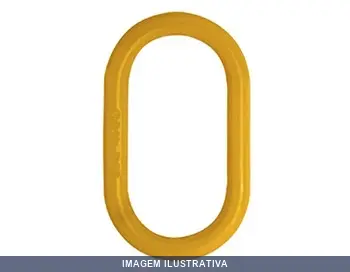
ANELAO DE SUST , T FRATI
Indicação de Uso: Sustentação e fixação de cargas em estruturas, equipamentos e instalações. Material e Resistência: Construído em aço, com capacidade de suportação de até 2,50 toneladas. Vantagem Prática: Proporciona segurança na distribuição de peso e fixação robusta em aplicações que demandam suspensão de cargas.
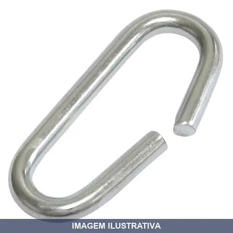
ARGOLA TRAVA CORRENTE FERRAR
Indicação de Uso: Travamento e fixação de correntes em aplicações de içamento, amarração e contenção de cargas. Material e Resistência: Construído em ferro forjado, projetado para suportar tensão contínua. Vantagem Prática: Proporciona travamento seguro e rápido da corrente, evitando afrouxamento durante o transporte ou armazenamento de materiais.
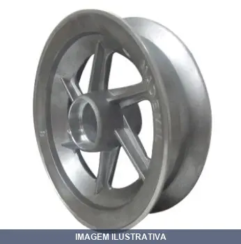
ARO DE ALUMINIO COM ROLAMENTO ALUCAL
ARO DE ALUMINIO 8'' COM ROLAMENTO (6205ZZ) O Aro de alumínio usa rolamentos que suportam cargas axiais e radiais de médio porte com uso frequente. Aro de Alumínio 8" Os aros de aluminio Mademil, estão disponíveis ao mercado nos tamanhos: 4”,6” e 8” com complementos e pneu semi maciço ou pneumático. Fabricados em alumínio, com alta resistência a corrosão e que proporcionam elevada resistência mecânica. Os aros de aluminio , são utilizados em diversos segmentos da indústria, como carrinhos de tra

ARO DE ALUMINIO RAIO COM ROLAMENTO WORKER
Aro de alumínio 8 polegadas com 3 raios e 2 rolamentos de esfera 6205. Diâmetro do furo 25mm, capacidade de carga 200kg. Indicado para pneus 3.5x8 polegadas. Aplicável em carrinhos de transporte, carrinhos de carga, equipamentos móveis e carrinhos para venda de alimentos.
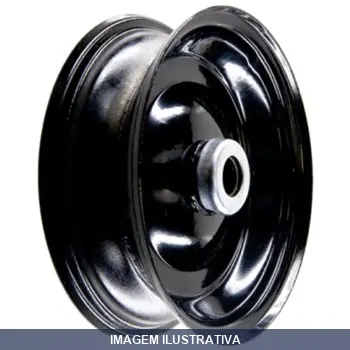
ARO PARA PNEU CAMAMAR . - AÇO FURO ROL ESFERA
Aro de aço para pneu de camamar. Possui furo para encaixe com rolamento de esfera. Destinado a rodas e equipamentos que utilizam pneus desta série. Aplicação em carrinhos, mochilas e similares.

ARO PARA PNEU CAMARA . - ALU FURO ROL ROLETE
Aro para pneu aro 4, compatível com medidas 2.50-4 e 3.50-4. Fabricado em alumínio. Furo passante 7/8 polegadas (23,6 mm). Indicado para carrinhos de carga, plataforma e transporte em geral.

ARO PARA PNEU CAMARA . - FURO PASSANTE AJAX
Aro com furo passante para montagem de pneu com câmara. Estrutura robusta com capacidade de carga de 150 kg. Compatível com sistemas de eixo de 1'' de diâmetro. Indicado para rodas de equipamentos, carrinhos e máquinas agrícolas. Facilita a troca e manutenção do pneu.

ARO PARA PNEU CAMARA . - ROLAMENTO ROLETE AJAX
ARO 3.25-8 / 3.50-8 - ROLAMENTO ROLETE 1 -6CM ARO 8 REF: A04023 MARCA: AJAX TAMANHO DO PNEU: 3.25-8 / 3.50-8 TIPO DE EIXO: ROLAMENTO ROLETE DIAMETRO DO EIXO: 1'' CAPACIDADE DE CARGA: 200KG LARGURA DA BANDA: 6 CM
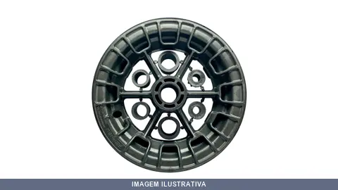
ARO UNIVERSAL PARA PNEU COM CAMERA X 120KG
Indicação de Uso: Carrinhos de transporte, plataformas e carrinhos de mão que utilizam pneus com câmara. Aro universal com rolamento, compatível com pneu pneumático de câmara interna. Material e Resistência: Aro resistente com capacidade de carga de 120 kg. Vantagem Prática: Instalação direta em eixos padronizados, permitindo mobilidade eficiente em equipamentos de movimentação manual.
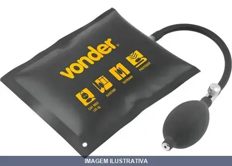
BOLSA INFLAVEL 165MMX MULTIFUNCAO VONDER
Bolsa inflável multiuso indicada para suporte, elevação e fixação de objetos em trabalhos de manutenção, reparo e construção. Construída em material resistente e durável. Permite distribuição uniforme de peso durante operações de sustentação temporária.
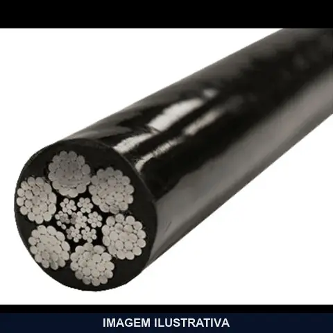
CABO AÇO A = GAL PLAST NYLON PRETO PARA ACADEMIA FRATI
Indicação de Uso: Montagem e substituição em aparelhos de musculação com sistema de polias. Material e Resistência: Cabo de aço galvanizado com alma de fibra, revestido em nylon preto, construção 6x19 vias. Vantagem Prática: Revestimento em nylon reduz desgaste por atrito, evita ruídos e facilita manuseio em ambientes corrosivos.

CABO AÇO ALMA AÇO = POLIDO BELGO
CABO AÇO COM ALMA DE AÇO CARGA DE RUPTURA MINIMA 36100KG
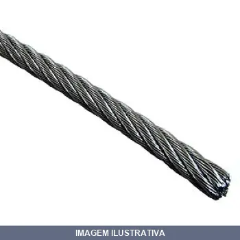
CABO AÇO ALMA FIBRA = GAL
Indicação de Uso: Içamento e movimentação de cargas em operações diversas. Material e Resistência: Conjunto de fios de aço galvanizado com alma de fibra, oferece resistência à abrasão e à corrosão/oxidação. Vantagem Prática: Flexibilidade para aplicações em segmentos industriais diversos.

CABO AÇO ALMA FIBRA = GALVANIZADO CIMAF
Cabo de aço com alma de fibra, construção 6x7, acabamento galvanizado. Indicação de Uso: levantamento, amarração e fixação de cargas em obras, indústria e aplicações gerais. Material e Resistência: aço galvanizado com carga de ruptura mínima de 0,96 tf. Vantagem Prática: resistência à corrosão e flexibilidade para uso em ambientes externos e internos.

CABO AÇO ALMA FIBRA = GALVANIZADO PLAST ARTVARAL
CABO ACO ARTVARAL RECAPADO 1,75 mm ROLO COM 500 METROS
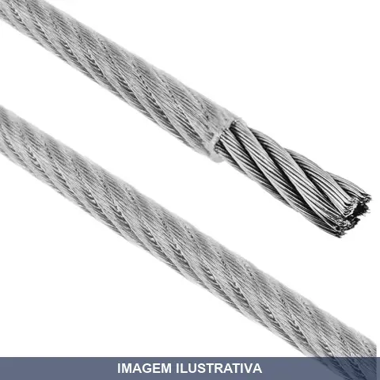
CABO AÇO ALMA FIBRA = GALVANIZADO PLAST PVC PR
Indicação de Uso: Movimentação, amarração e elevação de cargas; aplicações em construção civil, indústria e ambientes com exposição a intempéries. Material e Resistência: Aço galvanizado com revestimento em PVC, alma de fibra natural. Categoria de resistência 1770 N/mm² conforme norma ABNT NBR ISO 2408. Vantagem Prática: Alma de fibra proporciona maior flexibilidade, menor peso por metro
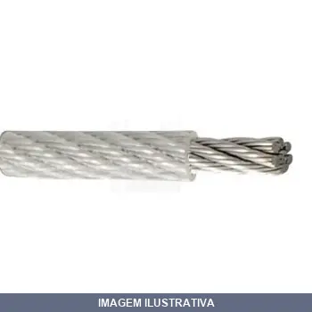
CABO AÇO ALMA FIBRA = GALVANIZADO PLASTIFICADO
CABO AÇO COM ALMA DE FIBRA 03349 CODIGO DA FRATI DESCRIÇÃO DA NF: CA 1,6MM 6 X 7 AF RD PLASTIFICADO

CABO AÇO ALMA FIBRA = P BELGO
Cabo de aço com alma de fibra, construção 6x25 fios. Indicação de Uso: Elevação, movimentação e fixação de cargas em sistemas de polia, guincho e esticador. Material e Resistência: Aço galvanizado com carga de ruptura mínima 18700kg. Vantagem Prática: Flexibilidade superior em relação aos cabos com alma de aço, maior durabilidade e melhor desempenho em aplicações dinâmicas.

CABO AÇO ALMA FIBRA = POLIDO CIMAF
Cabo de aço com alma de fibra, construção 6x19, polido. Indicação de Uso: Elevação, movimentação e fixação de cargas em aplicações gerais. Material e Resistência: Aço galvanizado com alma de fibra, carga de ruptura mínima de 2.500 kg. Vantagem Prática: Flexibilidade superior e melhor distribuição de carga em polias e tambores.

CABO AÇO ALMA FIBRA = S GALVANIZADO CIMAF
CA 9,50 FA 6X19S AF RD EIPS PE FRATI: 04095 NF 43119 VEIO GALVANIZADO. BBRG REF: 41039714 CA 9,5 6X19S AFA RD GB RV CABO AÇO COM ALMA DE FIBRA CARGA ROPTURA MIN.EFETIVA KGF 6100

CAMARA DE AR . -
Câmara de ar para pneus de veículos pequenos e implementos agrícolas. Construída em borracha, oferece vedação interna do pneu. Indicada para reposição e manutenção de pneus em condições de uso normal.

CAMARA DE AR . - COLSON CP. .4
Indicação de Uso: Carrinhos de carga, armazém e transporte manual. Vantagem Prática: Resistente a trabalho em asfaltos, reduz ruídos e vibrações. Capacidade de carga: 110 kg. Pressão: 40 PSI. Montagem em pneu e aro 4.
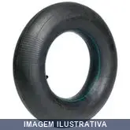
CAMARA DE AR . - CP. - COLSON
Câmara de ar pneumática para pneu aro 4, modelos 350-4 ou 410-4. Suporta peso total de até 150 kg sob pressão de 40 PSI. Indicada para carriolas, carrinhos de mão, plataformas e construção civil. Não recomendada para uso automotivo.

CAMARA DE AR . - DUAS LONAS CP. . COLSON
CP. 325.8 - 2444 - CAMARA PNEUMATICA 325-8 CARGA DE TRABALHO DA RODA 120KG

CAMARA DE AR AJAX
Câmara de ar para pneu de carrinho de mão, carros de carga e equipamentos de transporte não motorizados. Fabricada com borracha de qualidade. Válvula TR1. Pressão máxima: 25 lbf/pol² após instalado com pneu no aro.
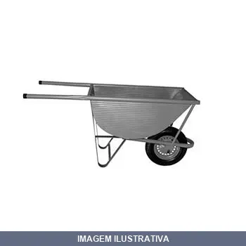
CARRINHO GIRICA IMARC
Carrinho de transporte com capacidade de 100 litros e resistência de até 120 kg. Indicado para movimentação de materiais em obras, canteiros e ambientes comerciais. Estrutura com chapa de aço galvanizado para maior durabilidade.
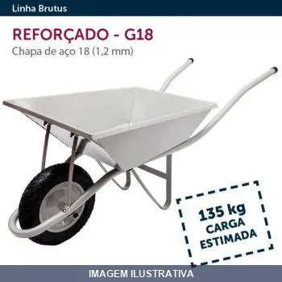
CARRINHO MAO CHAPA PNEU CAMARA G- ESFERA
CARRO DE MÃO G-18 PCI DESMONTADO Reforçado G18 • Caçamba fabricada em chapa de aço 18 • Varal produzido com tubo de aço costurado 1,2 mm de espessura e 1,6 m de comprimento • Caçamba com 55 litros de capacidade • Mancal aparafusado em aço galvanizado com formato tubular • Pintura eletrostática na cor cinza
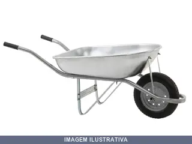
CARRINHO MAO CHAPA PNEU CAMARA GALVANIZADO
Indicação de Uso: Construção civil, indústria, agricultura, jardinagem, avicultura e demais aplicações que exijam transporte de materiais. Material e Resistência: Caçamba reta fabricada em chapa de aço carbono com acabamento galvanizado. Estrutura pintada que oferece proteção contra corrosão e oxidação. Pneus com câmara de ar de design com 02 lonas, resistentes a impactos. Vantagem Prática: Caçamba galvanizada e estrutura pintada proporcionam durabilidade em
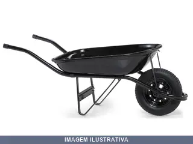
CARRINHO MAO CHAPA PNEU CAMARA PRETO FISCHER
Carrinho de mão com capacidade de 50L, estrutura em aço preto com chapa reforçada. Equipado com pneu câmara. Ideal para transporte de materiais em obras, canteiros e ambientes comerciais. Estrutura desmontável para facilitar armazenamento e manutenção.
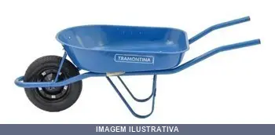
CARRINHO MAO CHAPA PNEU CAMARA TRAMONTINA
Carrinho de mão com chapa de aço para transporte de carga. Equipado com pneu com câmara, proporcionando mobilidade em terrenos variados. Indicado para obras, jardins, sítios e uso geral em movimentação de materiais. Capacidade de 50 litros.
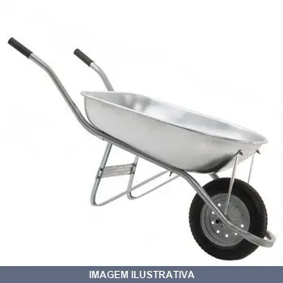
CARRINHO MAO CHAPA PNEU CAMARA VERDE FISCHER
CARRINHO DE MAO FISCHER 60L CAC AÇO (VERMELHO) (5659) PARA CAMARA 3,25 X 8 ARO 0,75MM BUCHA Leveza, versatilidade e resistência são características básicas dos carrinhos de mão Fischer. Carrinho de mão reforçado, feito para o serviço pesado. DETALHES - Garantia: 6 meses - Completamente desmontáveis - Sistema de mancal e encaixes fáceis de montar de alta durabilidade - Chassi, pés, travessas, escoras e caçamba fabricados em aço carbono. ESPECIFICAÇÃO TÉCNICA - Peso (P/C 3.25x8”): 9,70kg - Espess
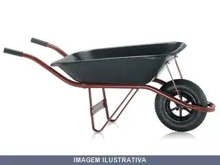
CARRINHO MAO PLASTICO PNEU CAMARA FISCHER
CARRINHO DE MÃO FISCHER 55L CAÇAMBA PP (5866) P/ C 3,25 X 8 ARO PP Leveza, versatilidade e resistência são características básicas dos carrinhos de mão Fischer. Carrinho de mão com caçamba plástica PP, feito para o serviços leves, como jardinagem, pequenas obras e reformas. Completamente desmontável. Sistema mancal e encaixes fáceis de montar e de alta durabilidade. DETALHES - Garantia: 6 meses - Chassi, pés, travessas e escoras fabricados em aço carbono. - Caçamba: PP ESPECIFICAÇÃO TÉCNICA - Pe
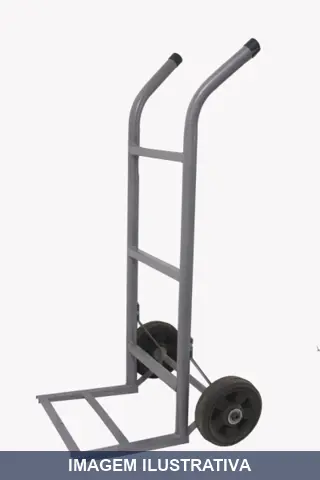
CARRO ARMAZEM PNEU CAMARA GML GADOTTI 200KG 05
Indicação de Uso: Transporte e armazenamento de cargas em ambientes internos e externos. / Material e Resistência: Estrutura resistente com capacidade de carga de 200kg, equipado com pneu câmara que oferece melhor aderência e estabilidade. / Vantagem Prática: Rodas com rolamento para facilitar movimentação e reduzir esforço físico.
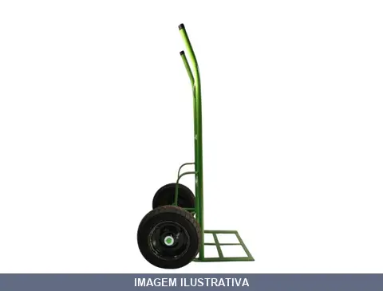
CARRO ARMAZEM PNEU CAMARA GML GADOTTI 400KG 105
Carro para transporte e armazenamento de materiais e cargas. Estrutura resistente com capacidade de suporte de até 400 kg. Equipado com pneu câmara para amortecimento e tração em diversos pisos. Indicado para movimentação de mercadorias em almoxarifados, depósitos e áreas comerciais.
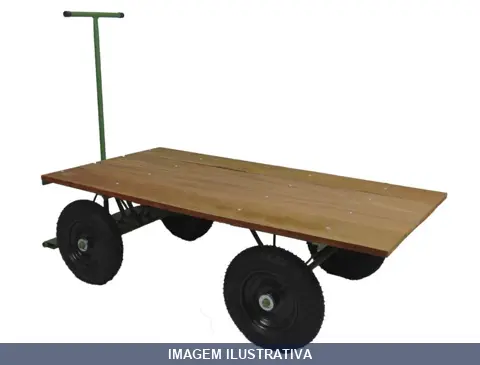
CARRO ARMAZEM PNEU CAMARA GML GADOTTI PLATAFORMA
Indicação de Uso: Transporte e movimentação de cargas em armazéns, comércios, indústrias. Material e Resistência: Estrutura em aço carbono com plataforma em chapa de aço. Equipado com 4 rodas pneumáticas com câmara (2 no eixo, 2 com freio na 5ª roda). Capacidade para 800 kg. Vantagem Prática: Sistema 5ª roda com cabo de tração em forma de T. Suporta diferentes tipos de terreno.
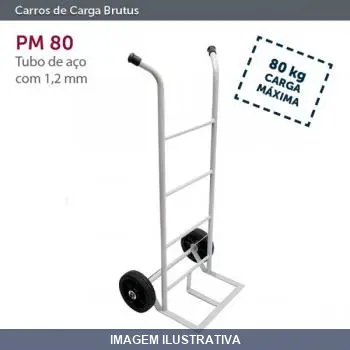
CARRO ARMAZEM PNEU MACICO ESFERA
Carros De Carga PM 80 • Fabricado em Tubo de aço com 1,2 mm de espessura, diâmetro de 1” e eixo de 7/8” • Rodas maciças com rolamentos • Carga estimada 80 kg

CARRO ARMAZEM PNEU MACICO GML /D GADOTTI
NF: 2163: CARRO ARMAZEM RODA 9' CARRO ARMAZEM CAPACIDADE DE CARGA DE 200KG RODA 9'' MACIÇA
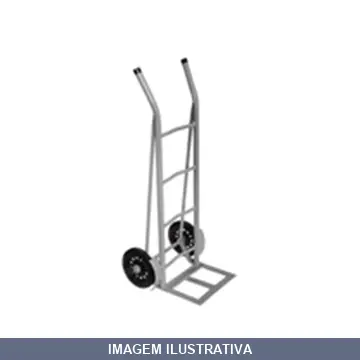
CARRO ARMAZEM PNEU MACICO IMARC
Carro de armazém com capacidade de carga de 150 kg, equipado com pneu maciço. Indicado para transporte e movimentação de materiais em ambientes internos e externos. Material resistente com pneu maciço que oferece durabilidade e não sofre furos. Solução prática para logística e armazenagem em comércios, indústrias e depósitos.
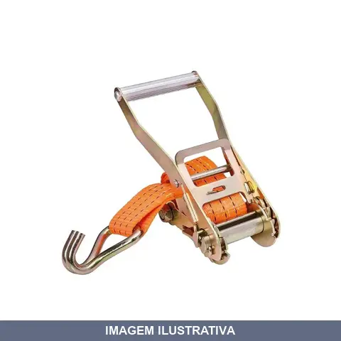
CATRACA .5TON COM RABICHO MOVEL ROBUSTEC
Catraca móvel para amarração de cargas com capacidade de 5 toneladas. Tamanho 50mm. Estrutura em aço bicromatizado com rabicho de fita de poliéster. Indicada para fixação e tencionamento em cintas utilizadas em transporte de cargas pesadas, caminhões, carretas e estruturas fixas. Acabamento com tratamento anticorrosivo.

CATRACA 03TON COM RABICHO MOVEL ROBUSTEC
Indicação de Uso: Fixação e amarração de cargas em transportes, movimentação de materiais e operações que exigem tração e tensionamento. Material e Resistência: Construída em metal para suportar cargas de até 3 toneladas. Vantagem Prática: Rabicho móvel permite ajuste e posicionamento flexível conforme a necessidade da amarração.
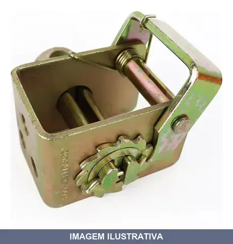
CATRACA 03TON SEM RABICHO FIXA ROBUSTEC
Indicação de Uso: Fixação e travamento de cargas em operações de movimentação, transporte e amarração de materiais. Material e Resistência: Construção robusta, capacidade de 3 toneladas. Vantagem Prática: Sistema de catraca fixa que oferece travamento seguro sem necessidade de complementos adicionais.

CATRACA 05TON COM RABICHO MOVEL ROBUSTEC
Indicação de Uso: Fixação e contenção de cargas em transportes, amarrações de carga e operações de içamento. Material e Resistência: Estrutura em metal com capacidade de 5 toneladas. Vantagem Prática: Rabicho móvel permite ajuste e adaptação a diferentes pontos de ancoragem.

CATRACA 10TON COM RABICHO MOVEL ROBUSTEC/RODOCO
Catraca móvel 10 toneladas para amarração de cargas com rabicho de fita de poliéster 100 mm. Comprimento do rabicho: 40 cm com gancho J. Fabricada em aço galvanizado com trava. Utilizada para esticar e fixar cargas em transportes, oferecendo segurança na fixação.
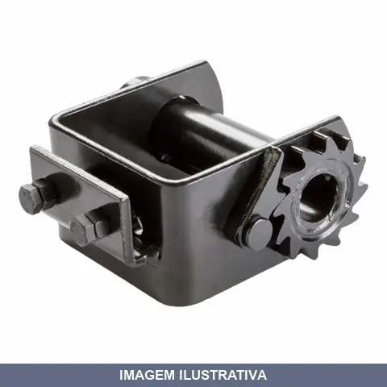
CATRACA 10TON FIXA ROBUSTEC
Indicação de Uso: Catraca para movimentação e fixação de cargas em operações de amarração e contenção. Material e Resistência: Estrutura fixa com capacidade de suportar até 10 toneladas. Vantagem Prática: Dispositivo de fixação que permite prender e travar cargas com segurança durante transporte e armazenagem.
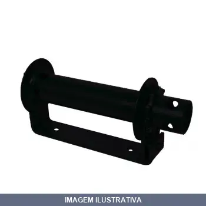
CATRACA CARROCERIA MIRIM CINFER
Catraca para carroceria de tamanho mirim, indicada para fixação e amarração de cargas em carrocerias de veículos. Material em ferro com acabamento preto. Proporciona travamento seguro de mercadorias durante transporte.
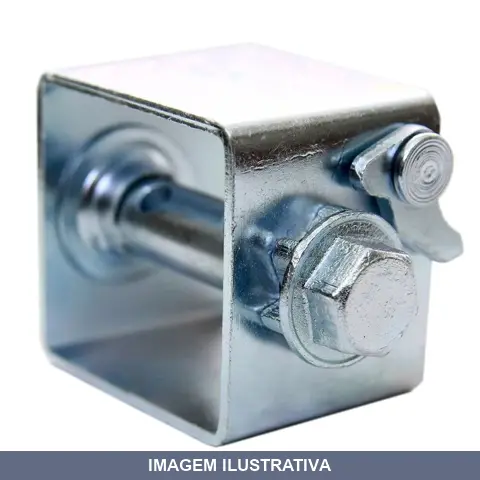
CATRACA PARA CORDOALHA CINFER
Indicação de Uso: Tensionamento e fixação de cordoalha em cercas, estufas e estruturas agrícolas. Material e Resistência: Chapa de aço 3mm de espessura com galvanização eletrolítica. Peso 650g. Vantagem Prática: Simples de acionar com chave ou alicate, permitindo reapertamento da cordoalha após dilatação por temperatura.
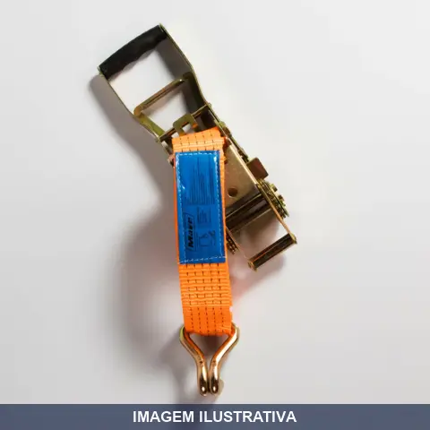
CATRACA TON COM RABICHO INVERTIDA MAVE
Catraca móvel invertida para amarração de cargas, capacidade 5 ton (5000 kg), largura 50 mm. Produzida em aço carbono conforme NBR 15883-2. Gancho tipo J. Fator de segurança 2:1. Temperatura de operação de -40°C a +100°C. Componente essencial para tensionar e fixar cintas de amarração em transporte de cargas em caminhões, veículos e embarcações.

CINTA DE AMARRACAO .5TON ROBUSTEC
Indicação de Uso: Amarração e fixação de cargas em transportes, estruturas e operações de movimentação. Material e Resistência: Cinta têxtil com capacidade de suportar até 1,5 toneladas. Vantagem Prática: Comprimento estendido propicia amarração de diversos tipos de objetos com segurança.
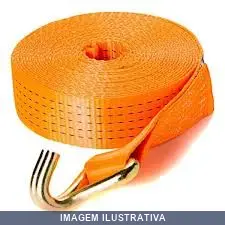
CINTA DE AMARRACAO 03TON ROBUSTEC
Indicação de Uso: Amarração de cargas como implementos agrícolas, geradores e caminhões. Material e Resistência: Produzida em 100% poliéster virgem, oferece menor absorção de água. Gancho e catraca em aço bicromatizado. Suporta fator de segurança 2:1 e elasticidade de até 7%. Temperatura de trabalho entre -40°C e +100°C.

CINTA DE AMARRACAO 05TON ROBUSTEC
Cinta de amarração utilizada para fixação e transporte seguro de cargas em veículos, embarcações e estruturas. Material confeccionado em polímero resistente. Apropriada para serviços de logística, movimentação e contenção de objetos durante o transporte.

CINTA DE AMARRACAO 10TON ROBUSTEC
Indicação de Uso: Amarração de cargas em transportes rodoviários, implementos agrícolas, geradores, caminhões e equipamentos industriais. Material e Resistência: Fabricada em 100% poliéster com tratamento químico para menor absorção de água. Gancho e catraca em aço bicromatizado. Fator de segurança 2:1. Vantagem Prática: Catraca reforçada e gancho tipo J proporcionam travamento firme e seguro da carga durante o transporte.
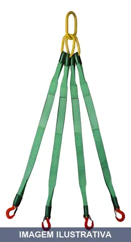
CINTA DE ELEVACAO PERNAS .2T . MT LEVTEC
Cinta de elevação com 4 pernas, destinada ao levantamento e transporte seguro de cargas. Capacidade de 4,2 toneladas. Comprimento de 3,75 metros. Indicada para operações de movimentação de materiais em canteiros de obra, indústrias e áreas de armazenamento. Distribui o peso da carga entre as quatro pernas, reduzindo concentração de esforço.
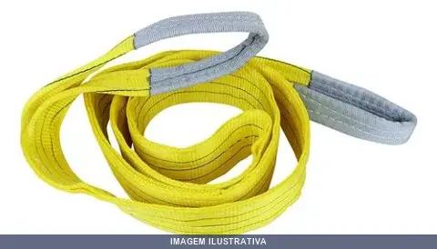
CINTA DE ELEVACAO SLING M AMARELA 3T ROBUSTEC
Indicação de Uso: Elevação e movimentação de cargas em operações de movimentação, montagem e transporte. Material e Resistência: Fabricada em poliéster, com capacidade de suportar até 3 toneladas. Vantagem Prática: Distribuição equilibrada de peso, reduzindo riscos durante o içamento de materiais.
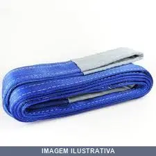
CINTA DE ELEVACAO SLING M AZUL 8T
Indicação de Uso: Elevação e movimentação de cargas em indústrias (automotiva, montadoras, metalúrgicas), construção civil, portos e segmentos diversos. Material e Resistência: Fabricada 100% em poliéster de alta tenacidade, camada dupla, com olhais protegidos nas extremidades. Fator de segurança 7:1. Conforme norma ABNT NBR 15637-1. Vantagem Prática: Baixo alongamento, alta resistência à abrasão e intemperismo. Manuseio simples e seguro.
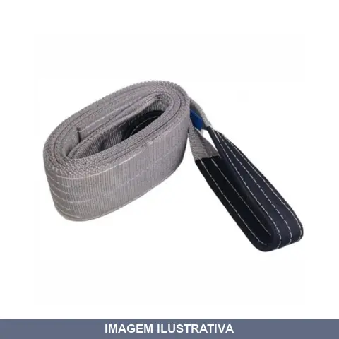
CINTA DE ELEVACAO SLING M CINZA 4T
Indicação de Uso: Elevação e movimentação de cargas em construção civil, indústrias (automobilística, metalúrgica, montadoras) e portos. Material e Resistência: Confeccionada em camada dupla 100% poliéster. Fator de segurança 7:1. Atende à norma ABNT NBR 15637-1. Resistência a intempéries e desgaste abrasivo. Vantagem Prática: Cinta plana com olhais protegidos nas extremidades. Manuseio simples e seguro. Identificação por cor cinza e etiqueta.
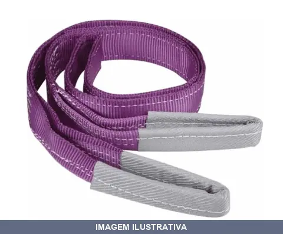
CINTA DE ELEVACAO SLING M ROXA 1T ROBUSTEC/RODOCORDA
Cinta plana tipo sling para elevação e movimentação de cargas. Confeccionada em poliéster de dupla ou quádrupla camada com olhais protegidos nas extremidades. Fator de segurança 7:1 e 5:1, conforme norma ABNT NBR 15637-1. Resistente a intempéries, abrasão e desgaste. Cor roxa padronizada internacionalmente para capacidade de 1 tonelada. Adequada para portos, armazéns, construção civil e indústrias.
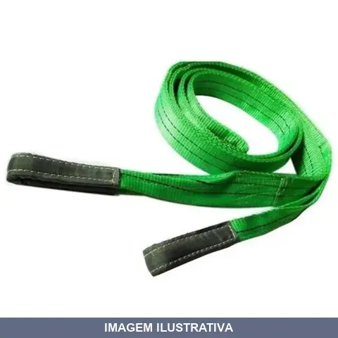
CINTA DE ELEVACAO SLING M VERDE 2T
Indicação de Uso: Elevação e movimentação de cargas em geral, aplicável em construção civil, indústrias e portos. Material e Resistência: Confeccionada em poliéster 100%, sling dupla com olhais reforçados. Capacidade de 2 toneladas na posição vertical, 4 toneladas em basket e 1,6 toneladas em chocker. Fator de segurança 7:1. Vantagem Prática: Flexibilidade e facilidade de manuseio reduzem o esforço durante operação, minimizando risco de danos às cargas. Cor verde facilita identificação.
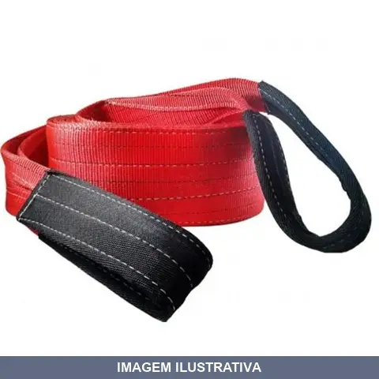
CINTA DE ELEVACAO SLING M VERMELHO 5T ROBUSTEC
Indicação de Uso: Elevação e movimentação de cargas em operações de carga e descarga, construção civil e atividades industriais. Material e Resistência: Cinta de poliéster com capacidade de suportar até 5 toneladas. Vantagem Prática: Distribuição uniforme de peso, reduzindo risco de danos à carga durante transporte vertical.
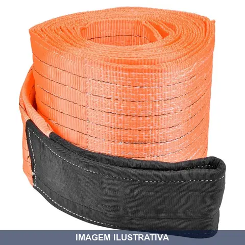
CINTA DE REBOQUE 70T
Indicação de Uso: Reboque e transporte de veículos e cargas pesadas. Material e Resistência: Fabricada em material resistente com capacidade de carga de 70 toneladas. Vantagem Prática: Proporciona segurança no deslocamento de veículos e cargas em operações de reboque.
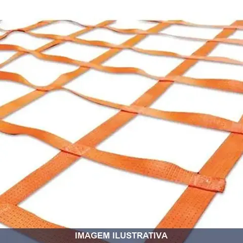
CINTA PARA CONTENCAO DE CARGA ,82MX 1T NOLL
Indicação de Uso: Cinta para contencao de carga em transportes, fixação de materiais em veículos e movimentação segura. Material e Resistência: Construida para suportar carga de até 1 tonelada. Vantagem Prática: Oferece segurança durante o transporte e armazenamento de produtos, prevenindo deslocamento de cargas.
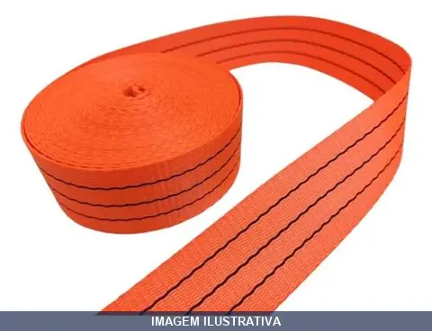
CINTA TON LARANJA
Indicação de Uso: Fixação, amarração e transporte de cargas em movimentação de materiais, logística e operações gerais. Material e Resistência: Fita/cinta sintética com capacidade de carga de 3 toneladas. Vantagem Prática: Proporciona segurança na contenção de objetos durante transporte e armazenagem.

CLIPS PARA CABO AÇO LEVE / = . Z CARBOSTOM
Indicação de Uso: Prender e amarrar cabos de aço em aplicações leves, confecção de laços, amarrações e fixações. Não indicado para elevação de cargas. Material e Resistência: Aço maleável fundido no corpo, alças e porcas em aço carbono 1020. Conforme norma DIN 741.
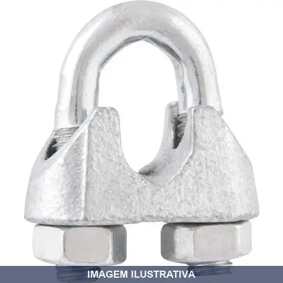
CLIPS PARA CABO AÇO LEVE / = . Z CARBOSTORM
Indicação de Uso: Ideal para prensar, amarrar e criar laços com cabos de aço em aplicações de fixação e amarração. Material e Resistência: Fabricado em aço maleável fundido com alças e porcas em aço carbono 1020. Acabamento galvanizado. Atende à norma DIN 741. Vantagem Prática: Facilita a montagem rápida de amarrações seguras em cabos de aço.
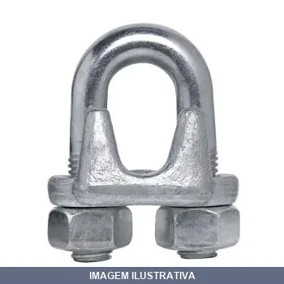
CLIPS PARA CABO AÇO LEVE = . Z FRATI
Indicação de Uso: Prensar e amarrar cabos de aço em processos de fixação e construção de laços. Material e Resistência: Fabricado em aço carbono galvanizado, resistente à corrosão. Recomendado para aplicações leves; não deve ser usado em elevação de cargas.
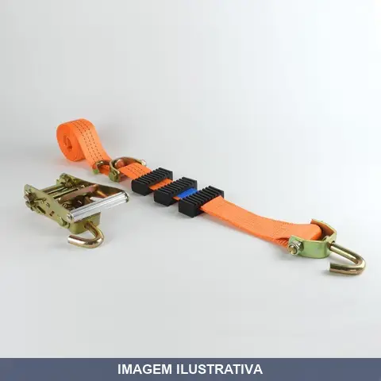
CONJUNTO CEGONHEIRO 50MMX3MT ROBUSTEC/RODOCORDA
Indicação de Uso: Transporte e amarração de cargas em operações de cegonheiro. Material e Resistência: Cinta em poliéster de alta resistência, catraca em aço bicromatizado resistente à corrosão, suporta capacidade de 3 toneladas com fator de segurança 2:1. Vantagem Prática: Inclui canoplas que reduzem atrito e desgaste, além de gancho extra para maior versatilidade de fixação.
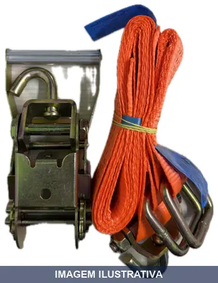
CONJUNTO CINTA TONELADAS+CATRACA PARA TRANSP DE VEICULOS
Conjunto cinta e catraca para amarração e fixação de cargas em veículos de transporte. Fabricado em poliéster com gancho e catraca em aço bicromatizado. Tensionamento seguro através de sistema de catraca, ideal para caminhões, carretas e reboques. Não utilizar para elevação de cargas. Atende normas EN 12195-2 e ABNT NBR 15883.
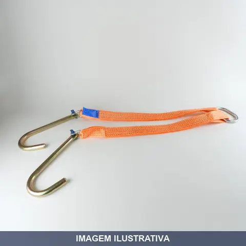
CONJUNTO DE ARRASTE 5T ROBUSTEC
Indicação de Uso: Cinta de arraste para trilhas, arraste de veículos e jeeps, amarração e transporte de cargas. Material e Resistência: 100% poliéster, tratada quimicamente para menor absorção de água e com tratamento térmico conforme normas de segurança. Capacidade de 5 toneladas com fator de segurança 2:1. Vantagem Prática: Costuras na cor preta para indicar sua capacidade, proporcionando utilização prática e segura.
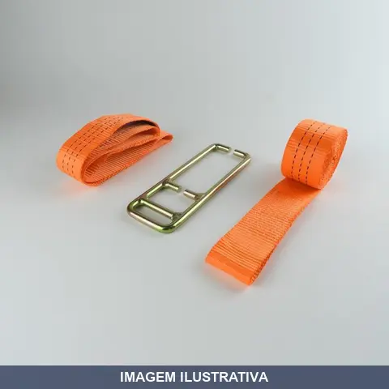
CONJUNTO FIXACAO TAMPA GRANELEIRO 3T ROBUSTEC
Conjunto de fixação para tampa de graneleiro com capacidade de 3 toneladas. Composto por cintas de poliéster laranja e fivela metálica para fixação, incluídas as peças necessárias para montagem segura. Indicado para fixação e travamento de tampas em graneleiros agrícolas e implementos de transporte.
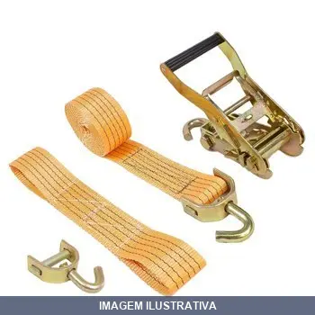
CONJUNTO GUINCHEIRO 50MMX3MT RODOCORDA
Indicação de Uso: Içamento, ancoragem e movimentação de cargas em construção, logística e indústria. Material e Resistência: Rodocorda de poliéster com núcleo reforçado, resistente a tração e abrasão, adequada para uso com sistemas de guincho e polias. Vantagem Prática: Permite distribuição uniforme de esforços durante operações de carga, reduzindo concentração de tensão nos pontos de ancoragem.

CORDA PET COLORIDA 06MMX ITACORDA
CORDA TRANÇADA 6 MM - 15 METROS - COLORIDA - MEADA Boa resistência a ruptura; Média resistência ao atrito; Fácil manuseio; Ótima resistência a intempéries; Opção econômica.

CORDA PET COLORIDA 08MMX ITACORDA
CORDA TRANÇADA PET CORES DIVERSAS 8 MM - 15 METROS - COLORIDA - MEADA CAIXA COM 10 UNIDADES Boa resistência a ruptura; Média resistência ao atrito; Fácil manuseio; Ótima resistência a intempéries; Opção econômica.

CORDA PET COLORIDA 12MMX ITACORDA 15M
CORDA TRANÇADA 12 MM - 15 METROS - COLORIDA - MEADA Boa resistência a ruptura; Média resistência ao atrito; Fácil manuseio; Ótima resistência a intempéries; Opção econômica.
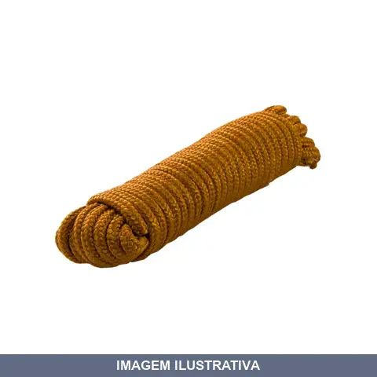
CORDA PET COLORIDA 12MMX ITACORDA 25M
CORDA TRANÇADA PET CORES DIVERSAS 12 MM MEADA COM 25 METROS CX C/ 6 UND
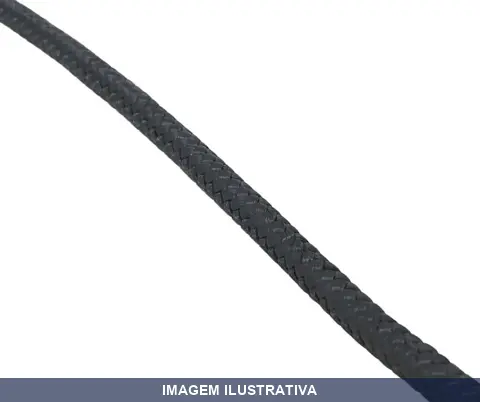
CORDA PET PRETA ITACORDA
CORDA TRANÇADA PET PRETA 6MM CARRETEL COM 200 METROS
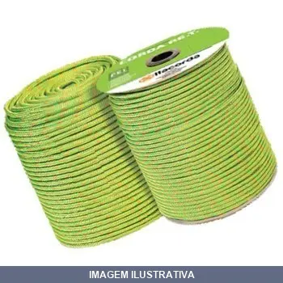
CORDA PET VERDE ITACORDA
CORDA TRANÇADA PET ITACORDA VERDE 3MM - 595 METROS CARRETEL
CORDA POLIPROPILENO BRANCA ITACORDA
CORDA TC POLIPROP. BRANCA 2.0MM Linha Profissiona P.P VIRGEM - ROLO Utilizadas em atividades profissionais, as cordas,kits,cintas são testadas em laboratório próprio para garantir a qualidade e segurança Itacorda. Todos os produtos têm composição virgem e foram desenvolvidos para suprir as necessidades específicas de cada segmento de aplicação. PESO ROLO: 1 KG METROS ROLO: 470 METROS METROS POR KG: 470 METROS RESISTENCIA KGF: 70
CORDA POLIPROPILENO VERMELHA ITACOR
Linha Profissiona P.P VIRGEM - ROLO Utilizadas em atividades profissionais, as cordas,kits,cintas são testadas em laboratório próprio para garantir a qualidade e segurança Itacorda. Todos os produtos têm composição virgem e foram desenvolvidos para suprir as necessidades específicas de cada segmento de aplicação. PESO ROLO: 1 KG METROS ROLO: 220 METROS METROS POR KG: 220 METROS RESISTENCIA KGF: 100

CORDA PP COLORIDA 06MMX ITACORDA
Indicação de Uso: Amarrações, fixações e trabalhos gerais de jardinagem, construção e logística. / Material e Resistência: Corda trançada em polipropileno (PP), disponível em cores diversas. Apresenta boa resistência à ruptura e resistência à umidade e intempéries. / Vantagem Prática: Fácil manuseio e operação, com excelente custo-benefício para aplicações diversas.

CORDA PP COLORIDA 08MMX ITACORDA
Corda trançada em polipropileno, indicada para amarrações, fixações e trabalhos gerais. Material resistente a intempéries e umidade, com boa resistência à tração. Apropriada para uso em ambientes internos e externos.
CORDA PP COLORIDA 10MMX ITACORDA
CORDA TRANÇADA 10 MM - 10 METROS - COLORIDA - MEADA CAIXA COM 10 UNIDADES Boa resistência a ruptura; Média resistência ao atrito; Fácil manuseio; Ótima resistência a intempéries; Opção econômica.
CORDA TORCIDA SISAL
Indicação de Uso: Amarrações, fixações e trabalhos gerais em construção, jardinagem e aplicações diversas. / Material e Resistência: Corda torcida em sisal natural, material resistente e durável para múltiplos usos. / Vantagem Prática: Apresenta boa relação custo-benefício e facilita o manuseio em diversas aplicações.
CORDA TRANCADA PE AZUL REC ITACORDA
Corda trançada fabricada em polietileno (PE) reciclado, proporcionando resistência e maleabilidade. Indicada para transporte terrestre, náutico, agronegócio, esportes, pet shops e aplicações diversas. Material ecológico produzido a partir de recursos reciclados.

CORRENTE GALVANIZADA AXION 03.2MM
Indicação de Uso: Fixação, amarração e suspensão de cargas em trabalhos gerais de construção, manutenção e movimentação. Material e Resistência: Corrente galvanizada, tratada contra corrosão. Vantagem Prática: Revestimento galvanizado oferece durabilidade em ambientes expostos à umidade e intempéries.
CORRENTE GALVANIZADA AXION 04,0MM
CORRENTE SOLDAVEL GALVANIZADA 4,00 MM 5/32 ELO CURTO

CORRENTE GALVANIZADA AXION 04,8MM
Indicação de Uso: Correntes para amarração, fixação e contenção de cargas em operações de levantamento, transporte e movimentação. Material e Resistência: Aço galvanizado, oferecendo proteção contra corrosão. Vantagem Prática: Galvanização prolonga durabilidade em ambientes internos e externos.

CORRENTE GALVANIZADA AXION 08.0MM
Indicação de Uso: Corrente para fixação, amarração e sustentação de cargas em aplicações gerais de construção, industrial e agrícola. Material e Resistência: Aço galvanizado, oferecendo proteção contra corrosão e oxidação. Vantagem Prática: Durabilidade estendida em ambientes externos e úmidos devido ao revestimento galvanizado.
CORRENTE POLIDA ANEL LONGO FUSI
CORRENTE SOLDADA POLIDA 6,0MM 15/64 ELO LONGO 50KG/ 25KG PESO POR ML 655 G DIAMETRO EXTERNO 29X51 CARGA DE TRABALHO 380 KG CARGA DE ROPTURA 1.520 KG

CORRENTE POLIDA FUSI 02.5MM
PESO POR ML 120 G DIAMETRO EXTERNO DO ELO 12X12 CARGA DE TRABALHO 50 KG CARGA DE ROPTURA 200 KG

CORRENTE POLIDA FUSI 03.5MM
CORRENTE SOLDAVEL POLIDA 3,5MM - 9/64 ELO CURTO 25KG PESO POR ML 235 G DIAMETRO EXTERNO 17X27 CARGA DE TRABALHO120 KG CARGA DE ROPTURA 480 KG
CORRENTE POLIDA FUSI 05.0MM
CORRENTE SOLDAVEL POLIDA 5,0MM - 3/16 ELO CURTO 25KG PESO POR ML 500 G DIAMETRO EXTERNO 23X34 CARGA DE TRABALHO 250 KG CARGA DE ROPTURA 1.000 KG

CORRENTE POLIDA FUSI 08.0MM
CORRENTE SOLDAVEL POLIDA 8,0MM 5/16 ELO CURTO 25KG PESO POR ML 1,300 G DIAMETRO EXTERNO 35X51 CARGA DE TRABALHO 625 KG CARGA DE ROPTURA 2.500 KG

CORRENTE POLIDA FUSI 09.5MM
CORRENTE SOLDAVEL POLIDA 9,5MM 3/8 50kg/ 25kg = nf 28047 cod 000388 PESO POR ML 1,875 G DIAMETRO EXTERNO 39X54,5 CARGA DE TRABALHO 800 KG CARGA DE ROPTURA 3.200 KG

CORRENTE POLIDA FUSI 12.5MM
CORRENTE SOLDAVEL POLIDA 12,5MM - 1/2 ELO CURTO 25KG PESO POR ML 3,090 G DIAMETRO EXTERNO 46X72 CARGA DE TRABALHO 1.500 KG CARGA DE ROPTURA 6.000 KG
CORRENTE POLIDA FUSI 15.40MM
CORRENTE SOLDADA POLIDA 15,4MM = 5/8 50KG DIAMETRO 58X85 PESO 5KG POR MT CARGA TRABALHO 2.250KG RUPTURA 9.000
CORRENTE S/FIM ZINCADA SAO RAPHAEL
CORRENTE SEM FIM ZINCADA SAO RAPHAEL 07 (COM 20 METROS)
DESTORCEDOR OLHAL X OLHAL CARBOGRAFITE
Indicação de Uso: Peça de conexão giratória (swivel) olhal x olhal, usada em correntes e cabos para evitar torção durante içamento ou tração. Aplicável em manutenção industrial, mecânica geral e trabalhos que envolvem movimentação de cargas com olhal. Material e Resistência: Fabricado em aço carbono, apropriado para aplicações de torque moderado. Vantagem Prática: Facilita a rotação livre entre dois pontos de fixação, com design olhal x olhal para distribuição de força.
EIXO PARA CARRINHO G14 ESFERA
Indicação de Uso: Eixo para carrinho de carga tipo G14, utilizado como componente estrutural de suporte e transmissão de movimento das rodas. / Material e Resistência: Construído em aço, oferece resistência adequada para aplicações em carrinhos de transporte de cargas. / Vantagem Prática: Possibilita a fixação e rotação das rodas, facilitando o deslocamento e manobra de carrinhos de carga.
EIXO ZINCADO LOTUS
Indicação de Uso: Eixo para carrinho de mão e carriola. Material e Resistência: Fabricado em aço carbono temperado e zincado. Revestimento zincado oferece proteção contra corrosão e maior durabilidade em ambientes adversos. Vantagem Prática: Construção robusta com dimensões precisas, instalação fácil.
ELASTICO .0MT GARRA METAL BRASFORT
Indicação de Uso: Fixação e amarração de cargas em transportes, movimentação de materiais e aplicações gerais que exigem elasticidade e flexibilidade. Material e Resistência: Elástico com garras de metal, oferecendo resistência e durabilidade para uso repetido. Vantagem Prática: Proporciona fixação segura com capacidade de elongação, adaptando-se a diferentes formatos e tamanhos de objetos.
ELASTICO .0MT GARRA PVC BRASFORT
Indicação de Uso: Amarração de bagagens, cargas e objetos em geral. Material e Resistência: Composição em látex/borracha com gancho de plástico PVC. Vantagem Prática: Garra de plástico oferece resistência e facilita o manuseio na fixação de cargas.
ELASTICO .5MT GARRA METAL BRASFORT
Indicação de Uso: Fixação e amarração de cargas, objetos e materiais em geral. Material e Resistência: Elastômero com garras metálicas nas extremidades para maior aderência e segurança. Vantagem Prática: Proporciona flexibilidade e ajuste fácil, sendo reutilizável para diversas aplicações de contenção e transporte.
ELASTICO .5MT GARRA PVC BRASFORT
Indicação de Uso: Fixação e prensagem de cargas, bagagens e objetos em geral. Material e Resistência: Elástico com garras de PVC que oferecem aderência e segurança na fixação. Vantagem Prática: Fácil aplicação e remoção, ideal para transporte e amarração de itens diversos.
ELASTICO LONA AZUL ALFIX
ELASTICO 6MM AZUL AGARRA LONA LATEX COM GANCHO MET. AZUL
ELASTICO LONA PRETO ALFIX
Elástico com gancho metálico preto, especialmente desenvolvido para prender e fixar lonas, coberturas e materiais similares. Possui acabamento resistente com ganchos de metal que facilitam o acoplamento rápido em ilhós e pontos de fixação. Ideal para amarração de cargas, proteção de mercadorias e vedação temporária de áreas.

ELASTICO LONA VERMELHA ALFIX
Elástico com gancho metálico para fixação e amarração de lonas. Indicação de Uso: Prender e ajustar lonas, lençóis de proteção e coberturas em geral. Material e Resistência: Elástico em látex com gancho em metal resistente à corrosão. Vantagem Prática: Proporciona fixação segura e rápida, permitindo ajustes sem necessidade de ferramentas.
ELASTICO MODELO REDE BRASFORT
Elástico em formato de rede, próprio para fixação e amarração de cargas. Ideal para prenderem objetos em veículos, estruturas ou durante transporte. Oferece flexibilidade e resistência para uso geral em aplicações de amarração e contenção.
ESCADA ABRIR EXTERNO DEG 07X2
ESCADA EXTENSIVA 2 X 7 DEGRAUS - ALUMINIO NOVA USO DOMESTICO ALTURA ESTENDIDA 3,90 MT ABERTA 2,22 MT SEPARADA 2,30 MT PESO MAXIMO 120 KG ESCADA EXTENSIVA ALUMÍNIO Escada ágil de alumínio, o que lhe confere extrema leveza e resistência. É indicada para serviços em geral, podendo ser utilizada de três formas: estendida, no formato pintor e separada, se tornando 2 escadas. Possui sapatas antiderrapantes. Sua carga máxima de trabalho é de 150 Kg. Garantia: 1 ano NCM: 7606.11.90 Produto 100% recic
ESCADA ABRIR EXTERNO DEG 10X2
ESCADA EXTENSIVA 2X10 DEGRAUS - ALUMINIO NOVA - USO DOMESTICO ALTURA ESTENDIDA 5,40 MT ABERTA 3,00 MT SEPARADA 3,20 MT PESO MAXIMO 120 KG ESCADA EXTENSIVA ALUMÍNIO Escada ágil de alumínio, o que lhe confere extrema leveza e resistência. É indicada para serviços em geral, podendo ser utilizada de três formas: estendida, no formato pintor e separada, se tornando 2 escadas. Possui sapatas antiderrapantes. Sua carga máxima de trabalho é de 150 Kg.
ESCADA EXTERNO FIBRA DEG ABERTA ,12MT BOTAFOGO
Indicação de Uso: Trabalhos em altura em redes elétricas e ambientes onde isolamento elétrico é necessário. / Material e Resistência: Montantes em fibra de vidro, degraus e componentes em alumínio, suporta peso máximo de 120 kg. / Vantagem Prática: Não conduz eletricidade, garantindo segurança em instalações e manutenções elétricas. Extensível para maior alcance em trabalhos diversos.
ESCADA RESID DEG 03
ESCADA ALUMINIO BOTAFOGO 3D USO DOMÉSTICO ALTURA MAXIMA 1,26 MT PESO MAXIMO 120 KG Escada Doméstica Alumínio Botafogo Escada em alumínio para uso doméstico. Leve e prática, é essencial para o dia-a-dia. Com apenas 10cm quando dobrada é bem fácil de guardar. É um produto certificado pelo Instituto Falcão Bauer e nas normas do Inmetro. Seu patamar de polipropileno de alta resistência e com travas laterais garante maior segurança. Garantia: 3 anos Peso Suportado: 120kg Produto 100% reciclável.
ESCADA RESID DEG 05
ESCADA ALUMINIO BOTAFOGO 5 DEGRAUS - USO DOMESTICO ALTURA MAXIMA 1,52 MT PESO MAXIMO 120 KG Escada Doméstica Alumínio Botafogo Escada em alumínio para uso doméstico. Leve e prática, é essencial para o dia-a-dia. Com apenas 10cm quando dobrada é bem fácil de guardar. É um produto certificado pelo Instituto Falcão Bauer e nas normas do Inmetro. Seu patamar de polipropileno de alta resistência e com travas laterais garante maior segurança. Garantia: 3 anos Peso Suportado: 120kg Produto 100% recicl
ESCADA RESID DEG 07
ESCADA ALUMINIO BOTAFOGO 7 DEGRAUS - USO DOMESTICO ALTURA MAXIMA 1,92 MT PESO MAXIMO 120 KG Escada Doméstica Alumínio Botafogo Escada em alumínio para uso doméstico. Leve e prática, é essencial para o dia-a-dia. Com apenas 10cm quando dobrada é bem fácil de guardar. É um produto certificado pelo Instituto Falcão Bauer e nas normas do Inmetro. Seu patamar de polipropileno de alta resistência e com travas laterais garante maior segurança. Garantia: 3 anos Peso Suportado: 120kg Produto 100% recicl

ESTICADOR CORDOALHA / .X CINFER
Indicação de Uso: Esticador para cordoalha, utilizado em fixação, amarração e tensionamento de cabos e cordas em trabalhos de construção, manutenção e aplicações gerais. Material e Resistência: Construído em metal, apropriado para suportar tensão contínua. Vantagem Prática: Permite ajuste preciso da tensão da cordoalha com facilidade de manuseio.
ESTICADOR CORDOALHA CINFER
Indicação de Uso: Esticador para cordoalha, utilizado em fixação, amarração e tensionamento de cabos e cordas em obras, instalações e amarrações diversas. Material e Resistência: Fabricado em metal, resistente para uso com cordoalha. Vantagem Prática: Permite ajuste e tensionamento seguro de cordas e cabos sem necessidade de ferramentas adicionais.
ESTICADOR G X G FRATI
Indicação de Uso: Esticador rosqueável para sistemas de tração, amarração e tensionamento em aplicações gerais de fixação e ajuste. Material e Resistência: Construção em aço galvanizado com rosca macho, apropriado para uso em ambientes internos e externos. Vantagem Prática: Permite ajuste e tensionamento preciso através de rosqueamento, facilitando a regulagem de cabos e cordas sem necessidade de ferramentas adicionais.
ESTICADOR GXO
ESTICADOR MALEAVEL GANCHO X OLHAL GALVANIZADO M12 X 125MM 12MM= 15/32'' QUASE 1/2'' Corpo e terminais forjados em aço maleável Acabamento : Galvanizado Fator de Segurança. : 3 x a carga de trabalho NF 42850 FRATI VEIO REF: 04159 ESTICADOR FORJADO GX G GALVANIZADO M12 X 125MM
ESTICADOR MANILHA/MANILHA VONDER
Indicação de Uso: Esticador para uso em içamento, amarração e fixação de cargas em operações de movimentação e transporte. Material e Resistência: Construído em aço, com conexões tipo manilha em ambas as extremidades para acoplamento seguro. Vantagem Prática: Permite ajuste de tensão da carga através do mecanismo de rosca, facilitando o aperto e fixação em trabalhos de amarração.

ESTICADOR OXG FRATI
ESTICADOR MALEAVEL GANCHO X OLHAL GALVANIZADO M5 X 70MM 05MM = 3/16'' Corpo e terminais forjados em aço maleável Acabamento : Galvanizado Fator de Segurança. : 3 x a carga de trabalho
FILME STRETCH 25MICRAS COM DE TUBETE ROLLMAIS
Indicação de Uso: Proteção, armazenamento e acondicionamento de materiais para estoque e transporte. Utilizado para transformar em bloco único e seguro diversos materiais que de outra forma seriam suscetíveis de separação ou queda. Material e Resistência: Filme em polietileno com estiramento até 300%. Possui resistência mecânica, alto poder de aderência e resistência a perfuração. Vantagem Prática: Pode ser utilizado manualmente ou em suportes e dispensers. Transparente, reutilizável e facilita
FITILHO DE RAFIA MEDIO CINZA RAFIA
FITILHO DE RAFIA MEDIO CINZA ROLO O fitilho de Rafia é ideal para fecha e lacrar caixas/embalagens, é um produto resistente
GANCHO
Indicação de Uso: Gancho para fixação em buchas de parede, apropriado para pendurar objetos leves e médios em ambientes internos. / Material e Resistência: Metal com acabamento que oferece durabilidade em uso residencial e comercial. / Vantagem Prática: Instalação simples e rápida em buchas pré-existentes, ideal para organização e armazenagem de itens diversos.

GANCHO AÇO FORJ . T COM TRAVA CARBOSTORM
GANCHO OLHAL AÇO CARBONO COM TRAVA 3,0 TONELADAS Material : Forjado em aço carbono 1045 Acabamento : Pintura epoxi vermelha Fator de Segurança : 5 x a carga de trabalho
GANCHO AÇO FORJ . T COM TRAVA FRATI
GANCHO OLHAL AÇO CARBONO COM TRAVA 1,0 TONELADA Material : Forjado em aço carbono 1045 Acabamento : Pintura epoxi vermelha Fator de Segurança : 5 x a carga de trabalho

GANCHO AÇO FORJ GIRATORIO . T COM TRAVA VONDER
Gancho olhal giratório com trava, capacidade de carga de 3,15 toneladas. Fabricado em aço forjado, material de alta resistência para trabalhos de elevação e içamento. Permite rotações de 360° antes do içamento, evitando torções na carga. Pintura amarela com proteção contra oxidação.
GANCHO AÇO GRAU . T COM TRAVA FRATI
GANCHO OLHAL GRAU 8 CORR. 6MM COM TRAVA 1,2T Material : Aço alloy grau 8 Acabamento : Pintura epoxi amarela Fator de Segurança : 4 x a carga de trabalho Norma : DIN 5688
GANCHO AÇO GRAU . T COM TRAVA GIRATORIO VONDER
GANCHO OLHAL GIRATORIO 16MM COM TRAVA G8 VDP Gancho olhal giratório com trava Indicado para realizar rotações completas de 360º antes do içamento ou elevação da carga Pintado na cor amarela, proporcionando resistência à oxidação Medida do gancho olhal giratório:16 mm Comprimento total do gancho com olhal giratório (A):355,0 mm Largura interna do olhal giratório do gancho (B):64,0 mm Altura interna do olhal giratório do gancho (C):53,0 mm Espessura do corpo do olhal giratório do gancho (D):25,0 m
GANCHO DA PONTA DA TRAVESSA PARA CINTA FERRAR
Gancho de ponta para travessa de cinta de ferrar. Indicação de Uso: fixação e travamento de cintas de ferrar em trabalhos de amarração e contenção. Material e Resistência: construído para suportar esforços de tração. Vantagem Prática: facilita o ajuste e a segurança da cinta durante o uso.
GANCHO DE CORDA FERRAR
Indicação de Uso: Fixação e amarração de cordas em estruturas, equipamentos e cargas. Uso em obra, construção civil e atividades de amarração em geral. Material e Resistência: Fabricado em ferro, oferece resistência para suportar cargas e tensões típicas de trabalhos com cordas. Vantagem Prática: Permite fixação segura e rápida de cordas, facilitando amarrações e travamentos em canteiros de obra e serviços de carga.
GANCHO S FERRAR
Indicação de Uso: Gancho em formato de S, destinado a ferrar e pendurar objetos em parede ou estrutura. Material e Resistência: Fabricado em ferro, apropriado para suportar itens em ambientes internos e externos. Vantagem Prática: Fixação simples e prática para organização e armazenamento de ferramentas, utensílios e materiais diversos.
GANCHO TIPO J T ROBUSTEC
Gancho tipo J robusto indicado para pendurar, fixar e organizar cargas em ambientes residenciais, comerciais e industriais. Construído em material resistente, oferece segurança na fixação de objetos em paredes e estruturas. Aplicável em garagens, oficinas, depósitos e áreas de armazenamento.
GUICHO MANUAL PEQ COMP 50MMX5MT ENGATCAR
Indicação de Uso: Guincho manual de cinta com sistema de catraca para tração e fixação de cargas em trabalhos de tração e elevação. / Material e Resistência: Fita de nylon de alta resistência com sistema de engrenagem por catraca. / Vantagem Prática: Oferece controle manual na operação de cargas com segurança.
GUICHO MANUAL PEQ COMP 50MMX7MT RG1009 ROBUSTEC
Indicação de Uso: Guincho manual com cinta e gancho, indicado para tracionar, içar ou amarrar cargas em trabalhos gerais de fixação. Material e Resistência: Estrutura robusta em material resistente ao uso contínuo. Vantagem Prática: Operação manual simples, portátil e prático para atividades de fixação e manutenção.
GUINCHO (TIRFOR) TON 7RM EDA
Indicação de Uso: Equipamento de elevação e movimentação de cargas em obras, manutenção e trabalhos que exigem tração controlada. Material e Resistência: Estrutura em metal com capacidade de suportar cargas de até 2 toneladas. Vantagem Prática: Mecanismo de tração com alavanca permite movimentação precisa e segura de materiais pesados em espaços reduzidos.
KIT CATRACA E CINTA ,150T MT LOTUS
Indicação de Uso: Fixação e amarração de cargas em transportes, movimentação de materiais e operações de carga/descarga. Material e Resistência: Cinta de poliéster com catraca de metal, capacidade de 0,150T. Vantagem Prática: Sistema de engate rápido com catraca para ajuste e aperto seguro da carga.
KIT CATRACA E CINTA ,8T MT 0 25X03
Indicação de Uso: Kit completo para fixação e transporte de cargas em operações de movimentação, amarração e contenção de materiais. Material e Resistência: Composto por catraca e cinta com capacidade de suporte de 0,8 tonelada. Vantagem Prática: Solução prática que combina catraca e cinta em um único kit, facilitando o manuseio e transporte de cargas com segurança.
KIT CATRACA E CINTA ,8T MT 0 25X04
Indicação de Uso: Para amarração de cargas em transportes gerais como implementos agrícolas, motos, geradores e caminhões. Material e Resistência: Composto por cinta em poliéster com catraca e gancho tipo J em aço bicromatizado. Resistente à tração e com durabilidade em condições de uso intenso. Vantagem Prática: Permite ajuste rápido e travamento firme através do sistema de catraca, facilitando a fixação segura de cargas.

KIT CATRACA E CINTA ,8T MT 0 35X07
Indicação de Uso: Amarração de cargas em transportes diversos, como motos, caminhões e implementos agrícolas. Material e Resistência: Cinta em poliéster 100%, catraca e ferragens em aço galvanizado com capacidade de 8 toneladas. Não indicado para elevação ou tração. Vantagem Prática: Instalação rápida e fácil, resistente à corrosão e à absorção de água, oferecendo fixação segura durante transporte.
KIT CATRACA E CINTA .5T MT ROBUSTEC 01 35X04 5
Indicação de Uso: Fixação e amarração de cargas em transportes, trailers e plataformas. Material e Resistência: Catraca de metal com cinta têxtil, capacidade de 1,5 toneladas. Vantagem Prática: Sistema de aperto rápido e prático para segurança de cargas durante o transporte.

KIT CATRACA E CINTA .5T MT ROBUSTEC 01 50X09
Indicação de Uso: Para amarração de cargas como implementos agrícolas, geradores e caminhões. Material e Resistência: Cinta 100% poliéster virgem, gancho e catraca em aço bicromatizado. Temperatura de trabalho entre -40°C e +100°C. Elasticidade até 7%. Vantagem Prática: Sistema de catraca ergonômico com gancho J para fixação segura durante transporte.
KIT CATRACA E CINTA 03T MT ROBUSTEC/ITACORDA
Kit com cinta e catraca para amarração de cargas. Fabricado em 100% poliéster virgem. Fator de segurança 2:1, elasticidade de até 7%, suporta temperaturas entre -40°C e 100°C. Aplicação em implementos agrícolas, geradores, caminhões e demais amarrações de carga. Componentes metálicos tratados contra corrosão.

KIT CATRACA E CINTA 05T MT ROBUSTEC
Indicação de Uso: Kit para amarração e fixação de cargas em transportes, caminhões e estruturas. Material e Resistência: Catraca e cinta com capacidade de carga de 5 toneladas. Vantagem Prática: Facilita a fixação segura de materiais durante o transporte e armazenamento.
KIT CATRACA E CINTA 10T MT ROBUSTEC
Indicação de Uso: Fixação e amarração de cargas em transportes, movimentação de materiais e operações de contenção. Material e Resistência: Catraca de metal com cinta de nylon, resistência de 10 toneladas. Vantagem Prática: Sistema de aperto rápido que distribui a força uniformemente, reduzindo esforço físico e risco de danos à carga.
LACO CABO AÇO PLASTIFICADO MT VONDER
LAÇO DE SEGURANÇA 1M PLASTIFICADO VONDER • Ideal para travar motos e bicicletas • Cabo de aço galvanizado de 1/4” - 6 mm de espessura • 2 laços nas extremidades prensados com presilhas de alumínio • Plastificado na cor amarela
LACO TIPO FT CABO AÇO GALVANIZADO AF M FRATI
LAÇO FT 1/4'' 6 X 19 AF GALVANIZADO COM 3,00 METROS
LACO TIPO FT CABO AÇO POLIDO ALMA FIBRA M FRATI
Laço tipo FT com cabo de aço polido e alma de fibra. Indicação de Uso: Elevação, movimentação e fixação de cargas. Material e Resistência: Cabo de aço polido com alma de fibra, fabricado em conformidade com normas NBR 13541 e ISO 7531. Vantagem Prática: Flexibilidade e resistência para trabalhos em diversos segmentos industriais.

MACACO GARRAFA T
Macaco hidráulico tipo garrafa para elevação de veículos e cargas conforme capacidade. Possui válvula de segurança, cabo dividido em duas partes para facilitar armazenamento, fuso de elevação com rosca para ajuste preciso e alça lateral. Usar, armazenar e transportar na posição vertical para evitar vazamento de óleo.

MACACO GARRAFA T
Macaco hidráulico tipo garrafa para elevação de veículos e cargas conforme capacidade. Possui válvula de segurança, cabo dividido em duas partes para facilitar armazenamento, fuso de elevação com rosca para ajuste preciso e alça lateral. Usar, armazenar e transportar na posição vertical para evitar vazamento de óleo.

MACACO GARRAFA T
Macaco hidráulico tipo garrafa para elevação de veículos e cargas conforme capacidade. Possui válvula de segurança, cabo dividido em duas partes para facilitar armazenamento, fuso de elevação com rosca para ajuste preciso e alça lateral. Usar, armazenar e transportar na posição vertical para evitar vazamento de óleo.

MACACO GARRAFA T
Macaco hidráulico tipo garrafa para elevação de veículos e cargas conforme capacidade. Possui válvula de segurança, cabo dividido em duas partes para facilitar armazenamento, fuso de elevação com rosca para ajuste preciso e alça lateral. Usar, armazenar e transportar na posição vertical para evitar vazamento de óleo.

MACACO GARRAFA T
Macaco hidráulico tipo garrafa para elevação de veículos e cargas conforme capacidade. Possui válvula de segurança, cabo dividido em duas partes para facilitar armazenamento, fuso de elevação com rosca para ajuste preciso e alça lateral. Usar, armazenar e transportar na posição vertical para evitar vazamento de óleo.
MACACO GARRAFA T
Macaco hidráulico tipo garrafa para elevação de veículos e cargas conforme capacidade. Possui válvula de segurança, cabo dividido em duas partes para facilitar armazenamento, fuso de elevação com rosca para ajuste preciso e alça lateral. Usar, armazenar e transportar na posição vertical para evitar vazamento de óleo.

MACACO GARRAFA T GRAFF
Macaco tipo garrafa com capacidade de 32 toneladas. Indicado para levantamento e sustentação de veículos e cargas pesadas em oficinas, garagens e trabalhos de manutenção. Estrutura em aço, apropriado para uso profissional e industrial.

MACACO GARRAFA T PRESTO
Indicação de Uso: Elevação e levantamento de veículos e cargas em manutenção, reparos e trabalhos gerais. Material e Resistência: Construção robusta em metal, suporta carga máxima de 16 toneladas. Vantagem Prática: Operação manual simples por sistema de garrafa, ideal para oficinas, garagens e trabalhos em campo.

MACACO GARRAFA T WORKER
Macaco tipo garrafa com capacidade de levantamento de 16 toneladas. Equipamento de elevação utilizado para levantar e manter suspensos veículos e cargas durante manutenção, reparo e trabalhos mecânicos. Indicação de Uso: Oficinas mecânicas, borracharias, garagens e trabalhos de manutenção automotiva. / Material e Resistência: Construção em aço com sistema de bombeamento hidráulico, resistência de até 16 toneladas. / Vantagem Prática: Operação simples e segura para elevação de cargas pesadas.
MACACO JACARE COM MALETE TONELADA NOLL
Macaco hidráulico tipo jacaré para içar veículos de até 2 toneladas em sentido lateral. Acompanha maleta plástica para transporte. Conta com rodas para auxiliar no posicionamento e válvula de segurança que bloqueia o funcionamento caso a carga máxima seja excedida. Indicado para troca de pneus, manutenção de veículos e elevação de cargas.
MANILHA LEVE RETA CARBOSTORM
Indicação de Uso: Manilha reta para suspensão e movimentação de cargas em equipamentos de içamento. / Material e Resistência: Forjada em aço carbono, galvanizada, com capacidade de carga de 1600kg e fator de segurança 5x. / Vantagem Prática: Conexão com pino rosqueado, resistência à corrosão e durabilidade em ambientes externos.
MANILHA LEVE RETA FRATI
MANILHA RETA P. ROSCA 5/16'' GALVANIZADA Material : Forjada em aço carbono 1045 Acabamento : Galvanizado Fator de Segurança : 5 x a carga de trabalho Norma : US Type

MANILHA PESADA CURVA COM PINO PORCA CARBO
Indicação de Uso: Elemento de união e fixação em lingas de cabos de aço e correntes para elevação, movimentação e amarração de cargas. Material e Resistência: Aço carbono 1045 forjado com pino reforçado em aço liga, porca e cupilha, galvanizado a fogo. Vantagem Prática: Formato semicircular proporciona flexibilidade no ângulo de conexão, permitindo adaptação a diferentes pontos de fixação.
MANILHA PESADA CURVA FRATI
MANILHA CURVA PESADA P ROSCA 5/16'' X 0,75T Material : Forjada em aço carbono 1045, pino reforçado em aço alloy, roscado (G 2150) Acabamento : Galvanizado Fator de Segurança : 6 x a carga de trabalho Norma : U.S. FED. RR-C-271D - Tipo IV-B - Grau A - Classe 3

MANILHA PESADA CURVA/RETA FRATI
Indicação de Uso: Manilha pesada para içamento e amarração em operações de carga e transporte. Disponível em versão reta ou curva conforme necessidade da aplicação. / Material e Resistência: Forjada em aço carbono com pino reforçado, roscada, capacidade de 6.500 kg com fator de segurança 6x. / Vantagem Prática: Acabamento galvanizado garante durabilidade e resistência à corrosão.

MANILHA PESADA KG CURVA FRATI
MANILHA CURVA PES. P ROSC 5/8'' X 3,2 TONELADAS Material : Forjada em aço carbono 1045, pino reforçado em aço alloy, roscado (G 2150) Acabamento : Galvanizado Fator de Segurança : 6 x a carga de trabalho Norma : U.S. FED. RR-C-271D - Tipo IV-B - Grau A - Classe 3
MANILHA PESADA RETA COM PINO ROSCADA
Indicação de Uso: Manilha para fixação, amarração e movimentação de cargas em operações de içamento, amarração e ancoragem. Material e Resistência: Construída em aço carbono com rosca, suporta carga de trabalho de 17000 kg. Vantagem Prática: Pino rosqueado permite fixação segura e rápida sem ferramentas adicionais.

MOITAO 1P 520 KG
MOITÃO 1X60MM COM TRAVA Esforço de carga reduzido em 50% por roldana. Equipamento em aço galvanizado. Sistema de trava e fixação com gancho.
MOITAO 2P 700KG
NF 410 ELEVAR: MOI-60X2 MOITAO 60X2 NCM: 84311090 MOITÃO 60MM X 2 ROLDANA - MONTADO TAMBEM CONHECIDO COMO CARDENAL Esforço de carga reduzido em 50% por roldana. Equipamento em aço galvanizado. Sistema de trava e fixação com gancho.

MOITAO 2P 800 KG
NF 410 ELEVAR: MOI-80X2 MOITAO 80X2 NCM: 84311090 TAMBEM CONHECIDO COMO CARDENAL Esforço de carga reduzido em 50% por roldana. Equipamento em aço galvanizado. Sistema de trava e fixação com gancho.

MOITAO 3P 970 KG
NF 410 ELEVAR: MOI-60X3 MOITAO 60X3 NCM: 84311090 MOITÃO 60MM X 3 ROLDANA - MONTADO TAMBEM CONHECIDO COMO CARDENAL Esforço de carga reduzido em 50% por roldana. Equipamento em aço galvanizado. Sistema de trava e fixação com gancho.
MOSQUETAO GIRATORIO SAO RAPHAEL
Mosquetão giratório de metal, tipo chaveiro, com argola e fecho tipo gancho, indicado para fixação de chaves e pequenos objetos. O mecanismo giratório permite rotação livre do elo, evitando torção e desgaste do que estiver acoplado. Fecho de abertura simples, sem sistema de rosca ou travamento de segurança.
MOSQUETAO OVAL AÇO CG670 KN CARBOGRAFITE
Mosquetão oval confeccionado em aço bicromatizado com trava dupla tipo rosca. Capacidade de carga máxima de 25 kN no sentido longitudinal, 9 kN transversal e 8 kN quando aberto. Recomendado para trabalhos em altura, práticas esportivas e sistemas de ancoragem. Norma: NBR 15837/2010.
MOSQUETAO TRAVA PRESSAO E
MOSQUETAO TRAVA ROSCADA GALVANIZADO 5 X 50MM CARGA TRABALHO 100KG Material : Estampado em aço maleável, com travamento duplo Acabamento : Galvanizado Fator de Segurança : Resistência : 2,5 Norma : DIN 5299
MOSQUETAO TRAVA PRESSAO VONDER
MOSQUETAO COM TRAVA 5 X 50 MM VONDER Indicado para sistemas de elevação de pequenas máquinas e equipamentos. Uso leve. Não utilizar para elevação/transporte de pessoas ou como acessório de segurança para práticas esportivas. Possui tratamento galvanizado que proporciona maior resistência à oxidação/corrosão
MOSQUETAO TRAVA ROSCAVEL OU VONDER 05MM 3/16
Mosquetão com trava roscável, confeccionado em aço com acabamento galvanizado. Possui sistema de trava dupla roscada que oferece segurança contra solturas acidentais. Indicado para movimentações de cargas, fixação de lingas de cabos ou correntes, e trabalhos de içamento. Material resistente à corrosão com certificação de conformidade técnica.

MOSQUETAO TRAVA ROSCAVEL OU VONDER 06MM 1/4
Mosquetão com trava roscável, confeccionado em aço com acabamento galvanizado. Possui sistema de trava dupla roscada que oferece segurança contra solturas acidentais. Indicado para movimentações de cargas, fixação de lingas de cabos ou correntes, e trabalhos de içamento. Material resistente à corrosão com certificação de conformidade técnica.

MOSQUETAO TRAVA ROSCAVEL OU VONDER 08MM 5/16
Mosquetão com trava roscável, confeccionado em aço com acabamento galvanizado. Possui sistema de trava dupla roscada que oferece segurança contra solturas acidentais. Indicado para movimentações de cargas, fixação de lingas de cabos ou correntes, e trabalhos de içamento. Material resistente à corrosão com certificação de conformidade técnica.
MOSQUETAO TRAVA ROSCAVEL OU VONDER 12MM 1/2
MOSQUETAO COM ROSCA 12,5 - 1/2 VONDER--CARGA TRABALHO 1.000KG

MOSQUETAO TRAVA ROSCAVEL OU VONDER 9,5MM 3/8
MOSQUETAO COM ROSCA 9,5 - 3/8 VONDER --CARGA TRABALHO 550KG
PARAFUSO OLHAL FRATI
Material : Forjado em aço carbono 1015 Acabamento : Galvanizado Fator de Segurança : 5 x a carga de trabalho Norma : DIN 580
PE DE APOIO RAL ACION LATERAL ROBUSTEC
Pé de apoio com capacidade para 150 kg, indicado para estabilização e nivelamento de estruturas, móveis e equipamentos. Acionamento lateral para regulagem de altura. Acabamento em cor RAL 950.
PE DE APOIO RAL ACION SUPERIOR ROBUSTEC
Indicação de Uso: Pé de apoio para máquinas, equipamentos e estruturas que necessitam de suporte e nivelamento. Material e Resistência: Confeccionado em material resistente, capacidade de carga até 150 kg por unidade. Acabamento em cor RAL 960 com acionamento superior. Vantagem Prática: Proporciona estabilidade e distribuição adequada de peso em superfícies, facilitando o nivelamento e a movimentação de equipamentos.
PINO RETO COM CORRENTE FERRAR
Indicação de Uso: Fixação e amarração de cargas, estruturas e equipamentos em trabalhos de construção, reforma e manutenção. Material e Resistência: Aço com corrente acoplada para segurança. Vantagem Prática: Design reto com corrente integrada facilita o transporte e a utilização em campo.

PNEU . - COLSON
Pneu para rodas de carrinhos, plataformas e equipamentos leves de movimentação. Construído em borracha resistente. Adequado para uso em ambientes internos e externos, com boa aderência ao piso.

PNEU . - LONAS COLSON
P.250.4 - 4201- PNEU 250-4 / 280-8 COLSON CARGA DE TRABALHO DA RODA 130KG
PNEU . - LONAS LEVORIN
Pneu com estrutura de 2 lonas para aplicações em carrinhos de mão, equipamentos de movimentação e pequenas máquinas agrícolas. Material de borracha resistente ao desgaste. Proporciona tração e estabilidade em terrenos variados.
PNEU . - LONAS WORKER
Pneu com estrutura de 4 lonas, indicado para carrinhos de mão, plataformas e equipamentos de movimentação. Construção em lona proporciona resistência e durabilidade para uso em terrenos variados. Adequado para aplicações que exigem tração e estabilidade em transportes manuais e mecanizados leves.

PNEU LONAS AJAX
Indicação de Uso: Pneu para carrinhos de mão, plataformas e equipamentos de transporte manual. Material e Resistência: Estrutura com 4 lonas, suporta carga de até 150kg. Vantagem Prática: Oferece durabilidade e estabilidade para trabalhos de movimentação de materiais em ambientes internos e externos.
PORCA OLHAL FRATI
OLHAL DE SUSPENSAO PORCA 10X1,50 Material : Forjado em aço carbono 1015 Acabamento : Galvanizado Fator de Segurança : 5 x a carga de trabalho Norma : DIN 582
PRENSA CABO DE AÇO 10PC FRATI
Indicação de Uso: Fixação e amarração de cabos de aço em aplicações de suspensão, ancoragem e retenção. Material e Resistência: Construído em alumínio, oferece fixação adequada para prensar cabos de aço. Vantagem Prática: Facilita a fixação rápida de cabos sem necessidade de ferramentas adicionais.
PRENSA CABO DE AÇO 25PC FRATI
Indicação de Uso: Confecção de lingas de cabos de aço, substituindo grampos em configurações que dispensam desmontagens. Material e Resistência: Aço galvanizado de alta resistência. Vantagem Prática: Instalação prática e segura; recomenda-se o uso de alicate especial para prensagem.
PRO PE SAPATILHA PP20 BC PCT PROTDESC
PRO PE SAPATILHA 20GM2 BRANCO PROTDESC PACOTE COM 100 UNIDADES FARDO COM 5
RODA BORRACHA COM ROLETE AJAX
Indicação de Uso: Movimentação de carrinhos, móveis, equipamentos e máquinas. Adequada para ambientes com pisos asfáltico, concreto liso e cerâmico. Material e Resistência: Núcleo em metal com rolamento rolete. Borracha maciça ou poliuretano maciço, resistentes a cortes e perfuração. Suporta grandes cargas. Vantagem Prática: Rodagem macia e silenciosa. Reduz ruídos e vibrações. Baixa manutenção e maior durabilidade em ambientes industriais com agentes químicos de média agressividade.
RODA NYLON AJAX
RODA 312 NYLON -LT Produzida em injeção única com nylon poliamida. É leve, possui resistência mecânica, roda com facilidade exigindo menos esforço para manobras e movimentação. Aplicações: Peso: Cargas leves a médias. Piso: Concreto liso e cerâmico. Ambiente: Aplicação em ambientes úmidos, com graxas, óleos, sais e alguns tipos de ácidos. É bastante utilizada em indústria de alimentos. REF: A09332 REF PADRÃO: 312 N TIPO DE ROLAMENTO: FURO PASSANTE DIAMETRO DA RODA: 3'' LARGURA DA BANDA: 32MM DI

RODA PNEU CAMARA . COM ROLETE -8PN.R COLSON
R.325-8.PN.R - RODA PNEUMATICA 325-8 COM BUCHA E ROLETE - ROLETE

RODA PNEU CAMARA . FURO PASSANTE AJAX
Roda com pneu e câmara para carrinhos de mão, carrinhos de compras e veículos não motorizados similares. Construída com pneu de duas lonas e câmara interna, apresenta furo passante para fixação em eixo. Estrutura robusta adequada para transporte e movimentação de cargas leves a médias em ambientes internos e externos.
RODA PNEU CAMARA . ROLETE -8PN.R COLSON
R.350-8.PN.R - 2839 - RODA PNEUMATICA 350-8 COM BUCHA E ROLETE - ROLETE
RODA PNEU CAMARA . ROLETE AJAX 3 50
RODA A. SPEED CARGO 3.50-8 4 LONA 1 ROLAMENTO ROLETE Pneus 4 lonas. Alta resistência a cargas mais pesadas. Principais Aplicações – Veículos não motorizados: carrinhos de mão, carrinhos plataforma, carrinhos de armazém e jericas. REF: A04524-C PNEU: 3,50-8 LONA: 4 CAMARA: 3,50-8/ TR13 ARO: A04024 DIAMETRO E TIPO DE EIXO: 1'' / ROLAMENTO ROLETE CARGA MAXIMA: 200KG
RODA PNEU CAMARA . ROLETE AJAX 6X2 5/8 150KG
Roda com pneu e câmara para carrinhos de mão, plataforma e armazém. Estrutura de aço com pneu 2 lonas e rolamento rolete. Indicada para veículos não motorizados em movimentação de carga.
RODA PNEU COMP FLEX BORDER BORDA PLANA COM ROL FB
Indicação de Uso: Transporte e movimentação de cargas em ambientes internos e externos. Material e Resistência: Pneu flexível com borda plana, suportado por rolamento de 1 polegada. Vantagem Prática: Rodízio versátil para equipamentos, carrinhos e plataformas que requerem mobilidade e estabilidade.

RODA PNEU COMP FLEX BORDER BORDA PLANA SEM ROL FB
Roda completa com pneu flexível de termoplástico, indicada para carrinhos de mão, plataforma e carrinho de carga. Material resistente, não fura, não murcha e absorve impactos. Capacidade de carga até 100 kg. Produto 100% reciclável, indicado para construção civil e aplicações industriais.
RODA PNEU COMP RD05-BE PP/PU FURO ALCALAY
RODA PNEU PP/PU COM BUCHA 12,7MM 19MM 22MM 25MM CAPACIDA 200 KG POR RODA
RODA PNEU FLEXIVEL S/C EIXO COM ROL , FB
Roda com pneu flexível sem câmara, eixo de aço, equipada com rolamento. Indicada para carrinhos, plataformas e equipamentos de movimentação de carga. Material em borracha flexível proporciona amortecimento e aderência em diferentes superfícies.
RODA PNEU MACICO FURO COFEMA
Roda com pneu maciço, indicada para movimentação de cargas e equipamentos. Apresenta construção em pneu maciço que dispensa calibragem e oferece resistência a furos e perfurações. Furo de encaixe compatível com eixos padrão, adequada para carrinhos, plataformas e equipamentos de transporte.
RODA PNEU MACICO KAORI
Indicação de Uso: Roda com pneu de estrutura sólida, destinada a carrinhos de mão, plataformas de transporte e equipamentos de movimentação de carga. Material e Resistência: Pneu maciço que dispensa ar, oferecendo resistência a furos e deformações. Vantagem Prática: Não necessita manutenção de calibragem e funciona continuamente sem risco de esvaziamento.

RODA PNEU PU . - COM ROLETE AJAX 2 50 4X3 4
RODA PU 2.50 - 4 EIXO 3/4 LT-14AX36 ROLAMENTO ROLETE As rodas super elásticas são produzidas com poliuretano termoplástico e têm como principal característica a sua própria construção compacta. São indicadas para operar em ambientes industriais e comerciais, em situações que apresentem grande risco de perfuração por materiais pontiagudos. Proporcionam uma rodagem altamente macia e excelente estabilidade. Produto de fácil manutenção. REF: A04260-PU PNEU: 2,50-4 DIAMETRO DO EIXO: 3/4'' ROLAMENTO:
RODA PNEU PU . - COM ROLETE AJAX 3 00 8X1
RODA PU 3.00 - 8 EIXO 1'' ROLAMENTO ROLETE As rodas super elásticas são produzidas com poliuretano termoplástico e têm como principal característica a sua própria construção compacta. São indicadas para operar em ambientes industriais e comerciais, em situações que apresentem grande risco de perfuração por materiais pontiagudos. Proporcionam uma rodagem altamente macia e excelente estabilidade. Produto de fácil manutenção. REF: A04764-PU PNEU: 3,00-8 DIAMETRO DO EIXO: 1'' ROLAMENTO: ROLAMENTO R
RODA PNEU PU . - COM ROLETE AJAX 3 50 4X7 8
Indicação de Uso: Ambientes industriais e comerciais com risco de perfuração por materiais pontiagudos. / Material e Resistência: Poliuretano termoplástico com rolete de rolamento, construção compacta. / Vantagem Prática: Rodagem macia e estabilidade aprimorada.
RODA PNEU PU X COM ROLETE AJAX
Roda com pneu em poliuretano e rolete, indicada para carrinhos de transporte, plataformas móveis e equipamentos de movimentação de carga. Material em PU oferece resistência ao desgaste e aderência em pisos internos. Adequada para aplicações que requerem mobilidade e deslocamento de materiais.
RODA POLIURETANO R312PF COLSON
Roda em poliuretano moldado de qualidade com banda amarela sobre núcleo em ferro fundido. Duplo rolamento de esferas 6001RS e bucha separadora. Dureza 95 Shore A, operável entre -40°C e 80°C. Indicada para rodízios série 12 de movimentação manual em linhas de produção e centros logísticos.
RODA PU = AJAX
RODA 414 PU-LT : 16A X 08 Produzidos com Revestimento em Poliuretano Moldado e núcleo em ferro fundido. Suportam altas cargas, protegendo o piso. Aplicações: Peso: Cargas médias e pesadas Piso: Asfáltico, Concreto Liso, Metálico Ambiente: indicadas para as mais diversas aplicações em ambientes industriais REF: A08544 REF PADRÃO: 414 PU TIPO DE ROLAMENTO: ROLAMENTO ESFERA DIAMETRO DA RODA: 4'' LARGURA DA BANDA: 38,1MM DIAMETRO DO FURO DO EIXO: 7/16'' CAPACIDADE DE CARGA: 300KG
RODA PVC CINZA
Indicação de Uso: Ideal para cargas leves a médias em pisos de concreto e superfícies lisas. / Material e Resistência: Estrutura em PVC cinza com revestimento em termoplástico. Oferece resistência química, a desgastes e impactos. / Vantagem Prática: Proporciona rodagem macia e silenciosa, protegendo o piso.
RODINHA DE BRIM RODASIL
RODINHA DE BRIM 15 CM Função Utilizadas em polimento e lustração de metais e acrílicos. Por serem constituídas no padrão costurado, propiciam maior durabilidade e resistência ao atrito.
RODIZIO FIXO 5POLX2 POLIURETANO AMARELA GARFO AXION
RODIZIO FIXO 516 RODA PU AMARELO 5'' CAPACIDADE DE CARGA 400KG

RODIZIO FIXO 8POLX2 POLIURETANO AMARELO GARFO
RODIZIO FIXO 816 RODA PU AMARELO/ LARANJA 8'' CAPACIDADE DE CARGA 400KG
RODIZIO FIXO = COM PNEU GARFO AXION
Rodízio com fixação fixa, pneu pneumático e garfo tipo Axion. Indicado para transporte de cargas em plataformas, carrinhos e equipamentos móveis. Capacidade de carga: 150 kg. Oferece mobilidade com absorção de impactos pelo pneu pneumático.
RODIZIO FIXO BOR WORKER
Rodízio fixo com diâmetro de 2 polegadas e núcleo em borracha. Indicado para móveis, equipamentos e carrinhos que necessitam de deslocamento controlado sem giração lateral. Material de borracha oferece aderência e proteção para pisos. Instalação em estruturas de ferro ou madeira.

RODIZIO FIXO BORRACHA AJAX
Rodízio fixo com roda em borracha maciça. Indicação de Uso: Ambientes internos como asfalto, concreto liso e cerâmico. Material e Resistência: Roda em borracha maciça com núcleo em aço estampado, suporta cargas leves a grandes sem deformação, rodagem macia e silenciosa. Vantagem Prática: Facilita a movimentação de móveis e equipamentos com proteção ao piso.
RODIZIO FIXO COM PNEU CAMARA AJAX
Rodízio pneumático fixo Ajax com pneu cargo speed e câmara de ar. Aro em chapa de aço. Indicado para pisos mal conservados e abrasivos. Oferece facilidade de movimentação com amortecimento de impactos e resistência a desgastes.
RODIZIO FIXO GEL
RODIZIO GEL 1.3/8 FIXO Rodízios em aço com roda de de resina termoplástica transparente e núcleo de policarbonato. Proporcionam alta resistência a corrosão e a agentes químicos. Possui facilidade de locomoção e boa durabilidade. Baixa deformação com carga estática. Aplicações Peso: Cargas leves. Piso: Concreto liso, madeira, cerâmico e epóxi. Ambiente: Domésticos e comerciais. Ideal para aplicação em móveis, expositores, displays, etc. Temperatura do ambiente variando entre -10ºC e 50ºC. Código:
RODIZIO FIXO NYLON AJAX
RODIZIO FIXO 312 RODA NYLON 3 Produzida em injeção única com nylon poliamida. É leve, possui resistência mecânica, roda com facilidade exigindo menos esforço para manobras e movimentação. Aplicações: Peso: Cargas leves a médias. Piso: Concreto liso e cerâmico. Ambiente: Aplicação em ambientes úmidos, com graxas, óleos, sais e alguns tipos de ácidos. É bastante utilizada em indústria de alimentos. Código:A09332-F Ref. padrão: A09332-F FL 312 N Diâm. da roda (pol): 3'' Larg. da banda (mm): 32 Di
RODIZIO FIXO NYLON WORKER
Rodízio fixo com roda em nylon branco e base em chapa de aço zincado. Eixo da roda com bucha para deslizamento suave. Ideal para movimentação de móveis, bancadas, carrinhos e equipamentos.

RODIZIO FIXO POLIURET LARANJA GARFO AXION
Rodízio fixo com roda em poliuretano laranja e garfo metálico. Indicado para móveis, equipamentos e carrinhos em ambientes internos e externos. Material resistente que protege pisos e suporta cargas contínuas em aplicações gerais. Instalação simples com parafusos de fixação.
RODIZIO FIXO POLIURETANO AMARELO GARFO AXION
Indicação de Uso: Movimentação e deslocamento de móveis, equipamentos e cargas em ambientes internos e externos. Material e Resistência: Roda em poliuretano amarelo com garfo fixo, estrutura em metal. Vantagem Prática: Facilita o transporte de objetos sem necessidade de elevação manual, proporcionando mobilidade controlada.
RODIZIO FIXO POLIURETANO FLP PF COLSON
Indicação de Uso: Movimentação de equipamentos e estruturas em diversos ambientes industriais, comerciais e logísticos. Material e Resistência: Garfo em aço zincado com dupla pista de esferas para giro preciso. Roda em poliuretano moldado sobre núcleo de ferro fundido, resistente a impactos, abrasão e produtos químicos. Vantagem Prática: Rolamento suave e silencioso. Ideal para pisos lisos com proteção ao piso.
RODIZIO FIXO PVC CINZA
Rodízio fixo com rodinha em PVC cinza e aro em metal cromado. Indicado para móveis e equipamentos com cargas leves a médias. Material resistente a desgastes e impactos, proporcionando rodagem suave e silenciosa. Protege pisos diversos.
RODIZIO FIXO PVC LARANJA
Rodízio fixo com estrutura na cor preta e roda em PVC na cor laranja. Indicado para móveis, equipamentos e utensílios que necessitam de deslocamento em ambientes internos. O material em PVC oferece resistência à corrosão e facilita a movimentação de cargas. Prático para instalação em móveis, carrinhos e estruturas diversas.
RODIZIO GIRATORIO 6P BOR COM FREIO/ROL/PINO PARA AND GLEF. .BF.R
REF: GLEF.62.BF.R- NOVA 3797 ROD GIR 6X2 ESPIGA LISA FREIO RODA FERRO COM BORRACHA ROLETE CAPACIDADE DE CARGA 225KG Para utilização em andaimes, suporta até 225kg por roda. Possui excelente sistema de freio atendendo as exigências normativas, garantindo a segurança do usuário. Disponibilidade no tamanho de 6" e duas opções de rodas, poliuretano moldado (PF) e borracha moldada (BF), ambas com núcleo de ferro fundido.
RODIZIO GIRATORIO 6P COM FREIO/ROL/PINO PARA AND GLEF. .PF.E
Rodízio giratorio com freio para andaimes. Indicação de Uso: Deslocamento e fixação de torres de andaime. Material e Resistência: Roda em poliuretano, núcleo em ferro fundido, capacidade de carga até 225 kg. Vantagem Prática: Sistema de freio eficiente para segurança e estabilidade durante o uso.
RODIZIO GIRATORIO = COM P GARFO AXION
Rodízio giratório com garfo tipo P, equipado com pneu pneumático de 4 lonas, câmara de ar e aro em chapa de aço. Indicação de Uso: Movimentação de cargas em pisos asfálticos, concreto rústico e superfícies metálicas em ambientes industriais. Material e Resistência: Estrutura em aço, pneu pneumático para maior conforto de deslocamento. Vantagem Prática: Ideal para pisos mal conservados e abrasivos, oferecendo melhor absorção de impactos e maior durabilidade em ambientes com aplicações diversas.
RODIZIO GIRATORIO BOR WORKER
Indicação de Uso: Para movimentação de móveis, bancadas, carrinhos, máquinas e equipamentos em pisos em bom estado de conservação. Material e Resistência: Roda de borracha com núcleo em chapa de aço zincado estampado, base em chapa de aço zincado e eixo com rolete. Vantagem Prática: Movimento suave e silencioso, facilitando manobras e deslocamentos.
RODIZIO GIRATORIO BORRACHA COM FREIO PARAFUSO AXION
Rodízio giratório com estrutura em aço estampado e roda de borracha maciça. Equipado com freio de parafuso para imobilização. Adequado para cargas leves, médias e pesadas. Oferece rodagem suave e silenciosa em diversos tipos de piso.
RODIZIO GIRATORIO BORRACHA COM FREIO WORKER 3POL
Indicação de Uso: Movimentação de móveis, bancadas, carrinhos, máquinas e equipamentos em pisos em bom estado de conservação, facilitando movimentação e manobra de forma silenciosa. Material e Resistência: Roda de borracha com núcleo em chapa de aço zincado estampado, base em chapa de aço zincado, eixo com rolete. Vantagem Prática: Placa giratória com freio para facilitar o manuseio e manter o equipamento fixo quando necessário.
RODIZIO GIRATORIO BORRACHA COM FREIO WORKER 5POL
Indicação de Uso: Movimentação de móveis, bancadas, carrinhos, máquinas e equipamentos em pisos em bom estado de conservação, facilitando movimentação e manobra de forma silenciosa. Material e Resistência: Roda de borracha com núcleo em chapa de aço zincado estampado, base em chapa de aço zincado, eixo com rolete. Vantagem Prática: Placa giratória com freio para facilitar o manuseio e manter o equipamento fixo quando necessário.
RODIZIO GIRATORIO BORRACHA ROL ESFERA COM FREIO TOTAL
Rodízio giratório com roda de borracha, rolamento de esferas e freio total de acionamento. Adequado para móveis, equipamentos e carrinhos que necessitam mobilidade com travamento. Estrutura resistente em metal, com roda em borracha/termoplástico. Rolamento de esferas proporciona movimentação suave e durável.
RODIZIO GIRATORIO BORRACHA TERMOPLASTICA COM FREIO TOTAL
RODIZIO GIRATORIO COM FREIO 3'' REF GL 312 BP+DA RODIZIO GIRATORIO COM FREIO TOTAL 3 Descrição: Revestimento em Termoplástico (Poliuretano) e aro em Polipropileno. Ajax utiliza Poliuretano ao invés de PVC, conferindo mais qualidade e durabilidade ao produto. Proporciona uma rodagem macia e silenciosa, protegendo o piso. Possui resistência química e tem boa resistência a desgastes e impactos. Aplicações: Peso: Cargas leves a médias. Piso: Concreto liso, madeira, metálico, cerâmico e epóxi. Ambie

RODIZIO GIRATORIO BORRACHA TERMOPLASTICA PINO AJAX
RODIZIO GIRATORIO ROSCA 412 BP 4'' COD: A09242-GR Revestimento em Termoplástico (Poliuretano) e aro em Polipropileno. Ajax utiliza Poliuretano ao invés de PVC, conferindo mais qualidade e durabilidade ao produto. Proporciona uma rodagem macia e silenciosa, protegendo o piso. Possui resistência química e tem boa resistência a desgastes e impactos. Aplicações: Peso: Cargas leves a médias. Piso: Concreto liso, madeira, metálico, cerâmico e epóxi. Ambiente: Indústria em geral; temperatura de -20º a
RODIZIO GIRATORIO BORRACHA WORKER
Indicação de Uso: Rodízio giratório para móveis, equipamentos e estruturas que necessitam mobilidade e deslocamento fácil. Material e Resistência: Construído com borracha, oferecendo aderência ao solo e proteção para pisos. Vantagem Prática: Facilita o movimento e reposicionamento de objetos com movimento em 360 graus.
RODIZIO GIRATORIO COM FREIO GOLD
RODIZIO GOLD POLIPROPILENO BASE GIRATORIA COM TRAVA (FREIO) 40
RODIZIO GIRATORIO GEL 1.3/8
Rodízio giratorio com roda em resina termoplástica transparente e núcleo em policarbonato. Estrutura em aço com alta resistência à corrosão e agentes químicos. Indicação de Uso: móveis e equipamentos em ambientes domésticos e comerciais em pisos lisos. Vantagem Prática: locomoção suave, baixa deformação sob carga e boa durabilidade.
RODIZIO GIRATORIO GEL 2POL
RODIZIO GEL 2'' GIRATORIO Rodízios em aço com roda de de resina termoplástica transparente e núcleo de policarbonato. Proporcionam alta resistência a corrosão e a agentes químicos. Possui facilidade de locomoção e boa durabilidade. Baixa deformação com carga estática. Aplicações Peso: Cargas leves. Piso: Concreto liso, madeira, cerâmico e epóxi. Ambiente: Domésticos e comerciais. Ideal para aplicação em móveis, expositores, displays, etc. Temperatura do ambiente variando entre -10ºC e 50ºC. Cód
![RODIZIO GIRATORIO GEL 2POL [023713]](fotos/023713.webp)
RODIZIO GIRATORIO GEL 2POL [023713]
Indicação de Uso: Movimentação de móveis, eletrodomésticos e cargas leves, protegendo pisos delicados como madeira, porcelanato e laminado. Material e Resistência: Roda em gel (termoplástico) com garfo em aço, base giratória rolamentada e acabamento cromado. Mecanismo giratório com esferas. Vantagem Prática: Movimento suave e silencioso em todas as direções, sem danificar o piso.

RODIZIO GIRATORIO GEL 3POL
RODIZIO GEL 3'' GIRATORIO Rodízios em aço com roda de de resina termoplástica transparente e núcleo de policarbonato. Proporcionam alta resistência a corrosão e a agentes químicos. Possui facilidade de locomoção e boa durabilidade. Baixa deformação com carga estática. Aplicações Peso: Cargas leves. Piso: Concreto liso, madeira, cerâmico e epóxi. Ambiente: Domésticos e comerciais. Ideal para aplicação em móveis, expositores, displays, etc. Temperatura do ambiente variando entre -10ºC e 50ºC. Códi
RODIZIO GIRATORIO GEL 3POL [023711]
Indicação de Uso: Movimentação de móveis, eletrodomésticos e cargas leves, protegendo pisos delicados como madeira, porcelanato e laminado. Material e Resistência: Roda em gel (termoplástico) com garfo em aço, base giratória rolamentada e acabamento cromado. Mecanismo giratório com esferas. Vantagem Prática: Movimento suave e silencioso em todas as direções, sem danificar o piso.
RODIZIO GIRATORIO GEL COM FREIO SIMPLES
Rodízio giratório com freio simples. Roda de resina termoplástica transparente com núcleo de policarbonato e estrutura em aço. Proporciona alta resistência à corrosão e agentes químicos. Indicação de Uso: Cargas leves em pisos de concreto liso, madeira, cerâmico e epóxi, ambientes domésticos e comerciais. Vantagem Prática: Facilidade de locomoção, boa durabilidade e baixa deformação sob carga estática.
RODIZIO GIRATORIO GEL COM FREIO WORKER
Indicação de Uso: Móveis e equipamentos que necessitam de movimentação suave e precisa. Material e Resistência: Roda em gel com eixo da roda com rolete. Estrutura giratória com sistema de freio e placa de aço. Vantagem Prática: Movimentação suave e silenciosa. Maior conforto na hora do uso.
RODIZIO GIRATORIO GLPF PPFP PRETO COM FREIO 170KG
Rodízio giratório com freio, roda de ferro revestida em poliuretano, garfo giratório em aço zincado com dupla pista de esferas, fixação por placa com 4 parafusos. Suporta até 170 kg de carga. Resistente a corrosão, óleos, graxas e produtos químicos, com baixo ruído no deslocamento.
RODIZIO GIRATORIO NYLON AJAX
RODIZIO GIRATORIO 312 NYLON 3'' Produzida em injeção única com nylon poliamida. É leve, possui resistência mecânica, roda com facilidade exigindo menos esforço para manobras e movimentação. Aplicações: Peso: Cargas leves a médias. Piso: Concreto liso e cerâmico. Ambiente: Aplicação em ambientes úmidos, com graxas, óleos, sais e alguns tipos de ácidos. É bastante utilizada em indústria de alimentos. Código: A09332-G Ref. padrão: GL 312 N Diâm. da roda (pol) 3'' Larg. da banda (mm): 32 Diâm. fur
RODIZIO GIRATORIO NYLON AXION
Rodízio giratório com estrutura em nylon. Indicado para móveis, equipamentos e utensílios que necessitam mobilidade e facilidade de deslocamento. Material resistente adequado para uso em ambientes internos. Permite livre rotação em 360 graus.
RODIZIO GIRATORIO NYLON FREIO WORKER
Rodízio giratório com roda em nylon, base em chapa de aço zincado e eixo com bucha. Possui mecanismo giratório com freio para imobilização. Indicado para movimentação de móveis, bancadas, carrinhos e equipamentos. Material nylon oferece leveza e resistência mecânica, adequado para pisos em bom estado de conservação. Freio facilita o manuseio e segurança na imobilização.
RODIZIO GIRATORIO NYLON WORKER
Rodício giratório com roda em nylon e base em chapa de aço zincado, indicado para movimentação de móveis, bancadas, carrinhos, máquinas e equipamentos. Proporciona deslocamento suave e manobra silenciosa em pisos em bom estado de conservação.
RODIZIO GIRATORIO PARA CADEIRA VONDER
RODIZIO GIRATORIO DUPLO DE NYLON 50 X 49MM CONE VONDER REF:35.79.504.500 Conteúdo da Embalagem: 1 Rodízio Ideal para bases pequenas, como: cadeiras, pés de mesa, entre outros. Diâmetro do pino x comprimento: 8 mm x 38 mm. Facilita a movimentação e a manobra Diâmetro da roda.:2" - 50 mm Largura da roda:49,0 mm Diâmetro do eixo da roda.:6,0 mm Capacidade de carga do rodízio:25 kg Material da roda.:Nylon Cor da roda:Preto Material da base do rodízio:Metálico Tipo do eixo da roda:Furo passante Tipo

RODIZIO GIRATORIO PNEUMATICO AJAX
RODIZIO GIRATORIO PNEUMATICO CARGO SPEED 6 X 2 Composto por Pneu 4 lonas, camara de ar e aro em chapa de aço. É indicado para aplicações em pisos mal conservados e mais abrasivos. Aplicações: Peso: Cargas médias Piso: Asfáltico, Concreto Rústico, Metálico Ambiente: Indicado para as mais diversas aplicações em ambientes industriais CODIGO: A08010S-CSG REF PADRAO: GS 62 PN DIAMETRO DA RODA: 6'' LARGURA DA BANDA: 45MM DIAM FURO DO EIXO: 5/8'' ESPESSURA DO GARFO: 5MM ESPESSURA DA PLACA: 5MM ALTUR
RODIZIO GIRATORIO POLIUR GLPF PF FP COM FREIO 170KG
Rodízio giratório com freio fabricado em poliuretano moldado com núcleo em ferro fundido. Roda com duplo rolamento de esferas e garfo em aço com acabamento zincado e dupla pista de esferas. Indicado para movimentação de carrinhos e plataformas. Resiste a graxas, óleos, sais, solventes e intempéries. Suporta até 170 kg.
RODIZIO GIRATORIO POLIURETANO
Rodízio giratório com revestimento em poliuretano moldado e núcleo em ferro fundido. Oferece proteção ao piso contra marcas e arranhões. Movimento suave e estável com menor esforço para manobras. Indicado para movimentação de móveis, bancadas, carrinhos, máquinas e equipamentos em pisos com bom estado de conservação. Sistema giratório de 360 graus.

RODIZIO GIRATORIO POLIURETANO AJAX
RODIZIO GIRATORIO 516 RODA PU AMARELO/ LARANJA Produzidos com Revestimento em Poliuretano Moldado e núcleo em ferro fundido. Suportam altas cargas, protegendo o piso. Aplicações: Peso: Cargas médias e pesadas Piso: Asfáltico, Concreto Liso, Metálico Ambiente: indicadas para as mais diversas aplicações em ambientes industriais CODIGO: A0855S-G REF PADRAO: GS 5S PU DIAMETRO DA RODA: 5'' LARGURA DA BANDA: 50MM DIAM FURO DO EIXO: 1/2'' ESPESSURA DO GARFO: 5MM ESPESSURA DA PLACA: 5MM ALTURA DO RODIZ
RODIZIO GIRATORIO POLIURETANO GLP PF COLSON
Rodízio giratorio com rodinha de poliuretano, indicado para móveis, equipamentos e estruturas que necessitam mobilidade e deslocamento. Material em poliuretano oferece resistência ao desgaste e suporta carga de até 170kg. Vantagem prática: facilita o deslocamento de objetos pesados e garante estabilidade durante o uso.
RODIZIO GIRATORIO PU LARANJA AJAX
Rodízio giratório com rodinha em poliuretano laranja. Indicado para móveis, equipamentos e estruturas que necessitam mobilidade e deslocamento facilitado. Material de construção resistente com rodinha em poliuretano, oferecendo movimento suave e proteção de pisos.
RODIZIO GIRATORIO PU LARANJA COM FREIO AJAX
RODIZIO GIRATORIO 416 RODA PU LARANJA 4'' Produzidos com Revestimento em Poliuretano Moldado e núcleo em ferro fundido. Suportam altas cargas, protegendo o piso. Aplicações: Capacidade até 300kg Peso: Cargas médias e pesadas Piso: Asfáltico, Concreto Liso, Metálico Ambiente: indicadas para as mais diversas aplicações em ambientes industriais Código: A08542-G Ref. padrão: GS45 PU Diâm. da roda (pol): 4'' Larg. da banda (mm): 50 Diâm. Furo do eixo (mm): 1/2'' Espessura do garfo (mm): 5 Espess
RODIZIO GIRATORIO PVC CINZA
Indicação de Uso: Móveis, carrinhos e equipamentos em ambiente industrial e doméstico para todas as direções. Material e Resistência: Roda de PVC cinza com núcleo de polipropileno cinza, rolamento duplo de esferas e garfo em aço. Resistência à corrosão. Vantagem Prática: Rodagem macia e silenciosa, não marcando pisos metálicos, cerâmicos, concreto liso, epóxi e madeira.
RODIZIO GIRATORIO PVC CINZA COM FREIO
Rodízio giratório com freio marca Ajax. Roda de PVC cinza com núcleo de polipropileno cinza e rolamento duplo de esferas. Garfo em aço com alta resistência à corrosão. Proporciona rodagem macia e silenciosa, não marcando o piso. Compatível com pisos metálico, cerâmico, concreto liso, epóxi e madeira.

RODIZIO GIRATORIO PVC CINZA COM ROSCA 1.5/8
RODIZIO GIRATORIO COM ROSCA 1.5/8 PVC CINZA CAPACIDADE 40KG
RODIZIO GIRATORIO PVC CINZA COM ROSCA 2POL
RODIZIO GIRATORIO ROSCA 2'' PVC CINZA CAPACIDADE 50KG

RODIZIO GIRATORIO PVC CINZA COM ROSCA 3POL
RODIZIO GIRATORIO 3'' COM ROSCA PVC CINZA CAPACIDADE DE CARGA 80KG

RODIZIO GIRATORIO PVC CINZA COM ROSCA 4POL
RODIZIO GIRATORIO COM ROSCA 4 PVC CINZA CAPACIDADE 100KG
RODIZIO GIRATORIO PVC CINZA COM ROSCA 5POL
RODIZIO GIRATORIO COM ROSCA 5 pol PVC CINZA CAPACIDADE 110KG
RODIZIO GIRATORIO PVC CINZA COM ROSCA E FREIO
RODIZIO GIRATORIO 1.5/8Pol PVC CINZA COM ROSCA E FREIO CAPACIDADE 40KG
RODIZIO GIRATORIO PVC LARANJA
Rodízio giratório com rolamento duplo de esferas. Garfo em aço com pintura em epóxi e roda em termoplástico com PVC laranja e núcleo de polipropileno preto. Resistente à corrosão, proporciona rodagem suave e silenciosa sem marcar o piso. Aplicação para cargas leves em pisos metálicos, cerâmicos, concreto liso, epóxi e madeira. Temperatura operacional de -20°C a 70°C.
RODIZIO GIRATORIO PVC LARANJA COM ROSCA AJAX
Indicação de Uso: Móveis e equipamentos em geral, ideal para cargas leves. Material e Resistência: Roda em termoplástico e PVC laranja com núcleo de polipropileno, garfo resistente em aço com pintura epóxi, rolamento duplo de esferas. Resistência à corrosão. Adequado para pisos metálico, cerâmico, concreto liso, epóxi e madeira. Vantagem Prática: Rodagem suave e silenciosa que não marca o piso. Funciona em temperaturas de -20°C a 70°C.
RODIZIO GIRATORIO VONDER
RODIZIO GIRATORIO 1'' LEVE PRETO VONDER Indicado para movimentação de móveis, bancadas, carrinhos, máquinas e equipamentos em pisos com bom estado de conservação. Linha leve. Possui núcleo em chapa de aço zincado, proporcionando maior resistência à oxidação/corrosão
RODIZIO STANLEY DUPLO TOLEMAT
Rodízio duplo indicado para móveis, equipamentos e estruturas que necessitam mobilidade. Possui duas rodas para distribuição de carga. Material em tolemat confere resistência e durabilidade. Permite deslocamento facilitado de peças e utensílios em ambientes interno e comercial.
SAPATILHA LEVE FRATI
Sapatilha leve em aço maleável, galvanizada, com acabamento resistente à corrosão. Indicação de Uso: Proteção de olhais em cabos de aço e cordas, evitando desgaste por atrito. Material e Resistência: Aço maleável estampado com galvanização. Vantagem Prática: Peso reduzido facilita instalação e manuseio.
TALHA MANUAL TONELADA CORRENTE MTS CSM
TALHA MANUAL DE CORRENTE 1 TONELADA 3 METROS As talhas manuais de corrente CSM são equipamentos simples, de fácil utilização e extremamente versáteis. Ideais para o içamento de cargas em obras, oficinas, frigoríficos, sítios, enfim, em qualquer lugar onde seja necessária a elevação de objetos ou máquinas com segurança.
TALHA MANUAL TONELADA CORRENTE MTS VT1003 VULCAN
Talha manual de corrente com capacidade de carga de até 1 tonelada, indicada para elevação em obras, indústrias e atividades de movimentação de cargas pesadas. Estrutura de resistência robusta. Corrente que proporciona eficiência nas operações de elevação.
TALHA MANUAL TONELADA CORRENTE MTS VT2003 VULCAN
Talha manual para operações de elevação com capacidade de 2 toneladas. Corrente de alta resistência assegura segurança e estabilidade para tarefas pesadas. Equipada com freios automáticos e dispositivos de travamento, garantindo confiabilidade em ambientes industriais. Operação manual precisa e eficiente para diversos cenários de elevação.
TALHA MANUAL TONELADA CORRENTE MTS VT3003 VULCAN
Indicação de Uso: Elevação e movimentação de cargas em ambientes industriais, oficinas e canteiros de obra. Material e Resistência: Construída em corrente, projetada para suportar carga de até 3 toneladas. Vantagem Prática: Operação manual, não requer energia elétrica, permitindo uso em locais sem alimentação de energia.
TALHA MANUAL TONELADA CORRENTE MTS WORKER
Indicação de Uso: Levantamento e movimentação de cargas em ambientes de oficina, construção e manutenção. Material e Resistência: Estrutura em aço com corrente de transmissão, capacidade de carga até 5 toneladas. Vantagem Prática: Operação manual sem energia, permitindo uso em locais sem alimentação elétrica.
TENSIONADOR DE CORR. TIPO ALAVANCA A
TTA51638 - TENSIONADOR DE CORRENTE GRAU 8 TIPO ALAVANCA CORRENTE 5/16 - 3/8

TENSIONADOR DE CORR. TIPO CATRACA A CARBOS
Indicação de Uso: Tensionamento e fixação de correntes em aplicações de içamento e movimentação de cargas. Material e Resistência: Construção em aço, suporta até 5.900 kg de carga. Vantagem Prática: Mecanismo tipo catraca permite ajuste rápido e seguro da tensão da corrente.

TENSIONADOR DE CORR. TIPO CATRACA A NOLL
Indicação de Uso: Fixação e tensionamento de correntes em amarrações de cargas para operações logísticas, industriais e agrícolas. Material e Resistência: Construção robusta resistente. Vantagem Prática: Sistema tipo catraca de acionamento manual, aperta e amarra de um lado e solta do outro para fácil remoção.

TENSIONADOR DE CORR. TIPO CATRACA A TTC1258
TTC1258 - TENSIONADOR DE CORRENTE GRAU 8 TIPO CATRACA CORRENTE 1/2 -5/8
TENSIONADOR DE CORR. TIPO CATRACA A TTC51638
Tensionador de corrente com sistema de catraca para ajuste rápido e seguro. Indicado para fixação e tensionamento de correntes em trabalhos de carga, transporte e amarração. Permite regulagem precisa do comprimento da corrente conforme necessidade da aplicação.
TRAVA PARA GANCHO . TONELADAS FRATI
Indicação de Uso: Movimentação e elevação de cargas em operações industriais, construção civil e logística. Material e Resistência: Forjado em aço carbono 1045, com fator de segurança 5x a carga de trabalho, conforme normas DIN (EN) e U.S. Federal Specification. Vantagem Prática: Trava de segurança integrada impede desprendimento acidental da carga durante o manuseio de materiais.
VENTOSA D. PARA CENTERROL
Indicação de Uso: Ventosa para fixação e movimentação de objetos em superfícies lisas e planas, com capacidade de suporte até 25kg. Material e Resistência: Construída em borracha, resistente a pressão e deformação durante o uso. Vantagem Prática: Permite transporte seguro de vidros, espelhos e outros materiais sem danificar a superfície.
VENTOSA PARA VIDRO DUPLA NOLL
Ventosa dupla para vidros com capacidade de carga de até 70 kg. Dotada de haste injetada em ABS reforçado e ventosas em borracha com sistema de sucção. Indicada para deslocamento de vidros, espelhos, mármores, granitos, chapas e outros materiais com superfícies lisas. Design ergonômico que facilita o manuseio e reduz a fadiga do operador.
VENTOSA PARA VIDRO SIMPLES NOLL
Indicação de Uso: Ideal para transporte e manuseio de chapas, vidros, portas e objetos com superfície lisa e plana. Também adequada para espelhos e cerâmicas. Material e Resistência: Fabricada com corpo em plástico e superfície de fixação em borracha. Capacidade de carga: 40 kg. Tempo máximo de fixação: 15 minutos.